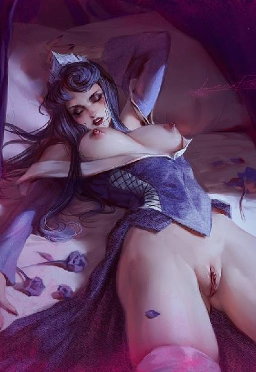
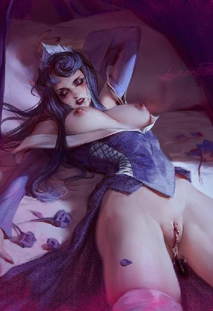

第91集·祸起甘露
唐国篇（15）
出版日期：2020-12-15
【本集内容简介】
李昂心高智短，处事无方；群臣各怀异志，结党营私；诸宦争权夺势，彼此攻讦。
唐国的藩镇、佛道，乃至商贾、江湖豪士，也纷纷各逞其能，纵横反复，长安城内扑朔迷离，危如累卵……
局势败坏到了这种地步，居然还有大臣上奏曰：皇宫里面出了祥瑞？！
然而这些都与程宗扬无关。一场杀局，再次席卷宣平坊……
※ ※ ※ ※ ※

封面人物：危月燕（限制版1）

封面人物：危月燕（限制版2）
长安。灞桥。
寒风渐止，冰雪消融，连日来的严寒隐隐有了回暖的迹象。灞水两岸的柳树凋尽碧叶，光秃秃的枝条低垂下来，在解冻的河面上留下烟雾般的倒影。
天近午时，一支风尘仆仆的车队出现在灞桥前方。近百辆四轮大车前后绵延一里有余，用两匹挽马才能拖动的大车上满载着丝帛、粮食、酒、盐、茶……数以百计的精壮民伕或推或拉，厚重的包铁木轮辗过青石板上的车辙，发出沉闷的辘辘声。
身着绿袍的官员似乎怕误了时辰，一边频频望着天色，一边连声催促，车马滚滚驶向长安城。
“这些是外郡运送贡品的车队。瞧见没有？中间那十几辆犍牛拉的大车，上面的木箱都贴着封条，车身特别沉——里面装的肯定都是钱铢！”
岸边的垂柳下系着一条小舟，一名丰秾艳质的大美人儿远远望着车队，水汪汪的美目中几乎冒出火来，“妈的！要不是人太多，我这会儿就干它一票！”
一名身材高挑、风姿纤美的白衣女子在她背后，翻了个好看的白眼，然后撇了撇小嘴。
另一名女子盘膝坐在船头，她戴着面纱，只露出一双天生便带着几分媚态的明眸，凝望着河面。
参差披拂的柳条下，一名美貌的道姑戴着芙蓉冠，冠侧两条朱红色丝带垂在胸前，她素手把玩着一柄拂尘，翘起的唇角带着浅浅的笑意，打趣道：“卿本佳人，奈何作贼？”
“哎呦喂。小鱼鱼，你是没穷过，不知道本公主的难处。”杨玉环诉苦道：“本公主那点子食邑，够干什么的？平常穿的、用的，哪里不花钱啊？亲戚们求上门来，好意思不理睬吗？就算打肿脸充胖子也得掏啊。”
白霓裳忍不住道：“你家亲戚不都是皇亲国戚吗？还用得着你接济？”
“你懂个屁！唐国这帮皇叔皇兄皇爷爷们，一个赛一个的能生，那点子俸禄哪儿够用的？平日里的人情往来，能省得下来吗？远的不说，光这些天过年的压岁钱就掏得我掉眼泪！”
杨玉环红着眼睛道：“我那干爹肯定没安好心！把我辈分弄这么高，年年得给一堆小崽子发钱！打六岁起，我就没挣过压岁钱！一堆十来岁的小屁孩围着我一个六岁的奶娃叫姑姑、姑奶奶，转着圈地要压岁钱——你敢信？”
“那你也给？”
“我那时候不懂事啊！钱花光了才知道挣钱的难处。”杨玉环道：“何况还有些省不下来的开支，比方昨天太后到观里上香，接驾的用度，上香的费用，随从内侍的赏赐，各处打点的花销……还不都是从本公主的饭钱里挪出来的？跟你说，我都好几天没吃饱了……”
鱼玄机笑道：“怪不得呢，公主殿下都饿瘦了。”
杨玉环双手捧面，惊喜地说道：“是吧！是吧！我也觉得这些日子清减些了呢！”
白霓裳白眼都快翻到天上去了，“接驾的钱还要你来出？大唐素称殷富，不都是宫里开支的吗？”
“哎哟我去！宫里给的那几个钱哪够啊？跟你们说，光是观里布置的灯树就花了本公主好几千金铢，加上给宫眷们设的步幛、宴席、车马费用……太后们来这一趟，上万金铢都打不住！”
白霓裳感叹道：“天之道，损有余而补不足；人之道，损不足以奉有余。太奢侈了。”
“怎么就奢侈了？本公主不要面子的吗！”杨玉环可不乐意听这个，她双手叉腰，嗔道：“这叫体面！本公主的体面就是大唐的体面！本公主的面子就是大唐的面子！本公主丢了面子，大唐的脸还往哪儿搁！为了大唐的体面，本公主奢侈点儿怎么了？你看不得本公主花钱，就是看不得我大唐的体面！”
鱼玄机笑道：“公主殿下息怒，大师姐只是一时感慨。”
“公主息怒。”白霓裳也娇声娇气地说道：“都是小女子的错。须知天大地大，太真公主的面子最大。”
见她服软，杨玉环冷哼一声，紧接着回过味来，当场就炸了，“你敢说我脸大？拔剑！我要跟你决斗！”
鱼玄机道：“公主误会了，大师姐没这个意思。”
白霓裳道：“我就是这个意思，怎么着？怕你啊！”
“好啊，姓白的！今天我们就先做过一场！”杨玉环捋起衣袖，叫道：“刀剑无眼，生死勿论！”
“比就比！”白霓裳对鱼玄机道：“你让开！让我跟她做一场！”
一直静坐不语的潘金莲忽然道：“来了！”
三人齐齐回首，只见水面下，一道灰绿色的影子游鱼般时隐时现。
潘金莲右手一招，腰间的鹤侣剑脱鞘而出，在空中划过一道虹影，往冬日下的水面斩去。
※ ※ ※ ※ ※
宣平坊，程宅。
厚重的帷幕遮蔽了天光，虽是午时，幽暗的斗室却一如深夜。
伴随着凌乱而无力的喘息声，肉体的撞击声响像雨点一样密集，频率越来越快。只是这番淫靡的声响中，全无半点旖旎和欢愉，唯有肃杀。
一具充满死亡意味的棺木放在室内，棺盖半开，上面那具赤裸的女体戴着黑色的头罩，双臂从大腿内侧穿过，搂在腰后，手腕被绳索系在腰下，翘起的双足同样用绳索捆住，盘在颈后。那女子目不视物，熟艳的身体被摆成屈辱而无法挣扎的姿势，私处尽露，敞露的下体此时正被一根粗大的阳具深深楔入。
充血的淫穴又红又肿，阴唇外翻，上面细小的褶曲都消失不见，表面肿得发亮。被剥开包皮的阴蒂肿胀着突起，上面被多次穿刺，又涂上淫药，大大小小的针孔中不时挤出殷红的血珠。
作为龙宸的杀手，危月燕经受过常人难以想象的残酷训练，但在毫无节制与怜悯的采伐下，也无法承受，从肉体和精神都已崩溃。这一晚，她不知道泄身了多少次，阴精早已枯竭。单纯从双修的角度讲，她作为鼎炉的效用几近于无，即使单方面地掠夺，也提供不了太多真元。
不过程宗扬并没有停止交合。一方面是为了炼化生死根中那股诡异的阴寒死气——毕竟自己身边的女子虽多，但哪个都舍不得损伤；另一方面，随着那股诡异的死气逐渐炼化，释放出大量极端的暴虐情绪，使他亟需发泄；同时在内心深处，他未尝没有报复的痛恨和冲动。
庭前坟茔累累，坟上新土未干，旧识化为新鬼，红粉葬于泥中。此时还去怜悯敌人，未免太奢侈了。
又一轮采伐之后，早已昏厥过去的女体抽搐着泄出一股稀薄的阴精，原本光洁的肌肤此时苍白如纸，没有半点血色。
程宗扬心头暴虐稍解，随手丢下不省人事的女体，来到帐外，在蒲团上盘膝而坐，引气归经，汇入丹田。
真气在经脉中艰难地行进着。因为昨晚屡次强行透支潜能，经脉内早已暗伤累累，真气如同流经沙漠的小溪，一条经脉还没打通，就消耗殆尽。
程宗扬不管不顾，竭力催动真气，打通受创的经脉。伤处不时传来痛意，时而犹如经脉被撕裂，时而痛如刀绞，不多时，他额头上便渗出一层冷汗。
暴烈的九阳与寒冽的太一交织在一起，逐渐变得温暖而平和。程宗扬忍痛控制着真气，就像走钢丝一样，用极致的耐心和毅力，一点一点修补伤势。
在他身侧，吕雉望着他眉上的汗珠，红唇不由抿紧。
汗珠越来越多，几乎连在一起，流淌下来。
吕雉咬了咬牙，从怀里取出一方丝帕，裹在指上，小心翼翼地点在汗珠上，没有触到他的肌肤。
汗珠晃动一下，被丝帕吸走。先是额头，然后是颊侧、脑后、颈中……
汗水渐渐消失，他的呼吸也逐渐变得悠长。
吕雉的视线顺着他的眼睑，一直看到鼻梁、嘴唇、下巴，再到下巴上冒出的胡髭……
忽然间她玉脸一红，像受惊的小兔般躲开视线，羞怩地扭过脸。她怎么也忘不了，自己第一次被他按在浴盆边时，那些尖硬的胡髭扎在羞处所带来的触感。
还有他炽热的鼻息……
令人战栗到几乎疯狂的舌头……
良久，程宗扬睁开双眼，吕雉表情已经恢复冷漠。她双手按在膝上，跪坐在旁，神情沉静而内敛。
程宗扬眉头蹙紧，那股阴寒的死气充塞在生死根中，并没有消融多少，真气也只是从涓涓细流勉强汇聚成线，离伤势复原尚远。
帷帐内传来几声嘻笑。孙寿与成光正在给那名女杀手清理身体，同时给她涂抹淫药，补充食水，好让她能继续泄出阴精。
程宗扬眉头紧锁，几乎将一个五级修为的女杀手采补殆尽，那股诡异的死气也只化解了少许。按这种效率算下来，即使给自己一打鼎炉都未必够用。
别说能不能找来一打五级修为的鼎炉，就算真有，自己难道能把她们都采补到根基尽毁，修为全废？这也未免太没人性了。
程宗扬不禁怀念起卓美人儿。作为自己内宅修为最高的侍婢，又是上等的仙品美穴，有她助自己双修，化解这股死气想必会容易许多。可卓美人儿被困在秘境，自己至今还没摸到开启的门径。
去哪儿找个处女呢？程宗扬不由陷入深思。普通人肯定不行，这股死气太过邪厉，稍有不慎就会把人害死。吕雉和黛绮丝这会儿不能用，其他跟自己有交情的，比如左彤芝左护法，江湖救急，跟自己打个友谊炮，想必不会拒绝，但左护法的处女岁月不知要追溯到多少年前。
潘姐儿倒是处女，可她央求过自己，自己怎么玩都可以，唯独不能破身。程宗扬暗自忖度，自己真要把她强上了，潘姐儿也多半只能乖乖挺着美屄，让自己给她开苞。怕就怕这边还没养好伤，那边燕姣然就冲过来，一掌把自己拍死。
光明观堂作为一个只收女子的宗门，居然搞出守宫砂这种反动透顶的东西，实在太不女权了！
紫丫头想都不用想，她的离魂症还没弄清楚，自己就算修为全失，也得保住她的完璧之身。
懊恼之余，程宗扬心里不禁蹦出个念头：释特昧普那魔僧，怎么就没个女儿呢？
张恽在外面小声道：“主子还在修炼吗？”
吕雉道：“刚收功。什么事？”
“有位客人来访。贾先生让奴才过来问问，主子见是不见？”
程宗扬不禁纳闷，连奉诏而来的鸿胪寺少卿都被老贾堵在外面，什么客人这么大的面子，竟然能让老贾问到自己跟前？
“谁？”程宗扬开口问道。
“回主子，说是跟京兆府的独孤参军有关。”
“咣啷”一声，程宗扬推门而出，“独孤郎？他出来了？人怎么样？有没有受伤？”
张恽道：“那人说知道独孤参军的下落，只是没见到侯爷，不肯开口。”
程宗扬二话不说，披上衣物，拔脚就往外走。
※ ※ ※ ※ ※
主楼的正厅内，贾文和正陪客人说话。
那名中年人文士打扮，衣冠楚楚，文质彬彬，但碧眼黄发，颌下留着连鬓的浓髯，竟然是在娑梵寺下院见过的那位蒲海云。
见程宗扬进来，蒲海云连忙起身，先长舒了一口气，随后欣然揖手，“能亲眼见到程侯无恙，蒲某这回可总算放心了。”
“蒲先生请坐。”程宗扬忍住询问独孤谓下落的冲动，一边招呼，一边往他身后看去，“这位是？”
蒲海云身后立着一名女子，锦衣绣服，衣饰华贵，头上戴着一幅缀着花边的黑色丝巾，面罩重纱，连发丝都遮得严严实实，只露出一双蓝色的眼眸。
蒲海云恭敬地说道：“这是小女。今日之事不敢假手于人，蒲某只带着小女奔走。珐图麦，快来拜见侯爷？”
那女子上前屈膝福了一福，细声道：“见过侯爷。”
看着她的装扮，程宗扬心头莫名生出一丝怪异的感觉，随即笑道：“原来是令嫒，快请起！张恽！将那只赤金缠臂取来！”
张恽连忙应下，去收藏物品的库房取那只赤金缠臂。
程宗扬笑道：“一点见面的薄礼，可不要嫌弃。”
一见面连话都没问，就直接给了一份重礼，蒲海云连忙逊让，“使不得！千万使不得！太贵重了。”
程宗扬笑道：“再贵重也比不上独孤参军。”
“蒲某唐突。”蒲海云歉然道：“实在是此事关系到蒲某身家性命，没见到侯爷本人，蒲某不敢轻易吐口。”
程宗扬点头道：“蒲先生行事周密，小心是应该的。”
“实不相瞒，蒲某已经接来独孤参军，眼下就在外面车上。”
蒲海云说着叫过女儿，让她去请独孤参军进来，一边道：“蒲某来时还心怀忐忑，唯恐侯爷遇险。以侯爷的身份，便是擦破块油皮，也是万金莫赎。”
蒲海云庆幸地拍了拍胸口，“眼下亲见侯爷安然无恙，在下这悬着的心，总算能放下来了。”
程宗扬含笑听着，这蒲海云虽是胡人，但举止颇为斯文，没有多少商人的市侩气。不过该放低姿态的时候，身段也足够柔软，上来就猛拍马屁，一点儿都不带含糊的。
“蒲先生客气了，你我素昧平生，怎会如此抬爱？”
“蒲某对侯爷仰慕已久。”蒲海云道：“当日在娑梵寺初会，侯爷英雄气概了得，蒲某早已心折不已。”
说话间，蒲海云的女儿带着一男一女进来。前面那位一张俊脸帅气十足，果然是京兆府法曹参军独孤谓。
只不过独孤郎这会儿可够狼狈的，蓬头跣足，衣冠俱无，身上只裹了条破旧的毯子，佳人落泊，令人望之生怜。
想来也是，他换了自己的衣物诱敌，被擒之后，那些衣冠都成了罪证，能给条毯子披着，已经是人情了。
程宗扬上前拉住他的手，“独孤郎……”
昨晚一场惊涛骇浪，大伙儿同经生死，此时相见，程宗扬千言万语都堵在喉头，半晌才笑道：“人没事就好。”
独孤谓惨然笑道：“侯爷万安。在下被投入推事院大狱中，幸得这位蒲先生仗义疏财，用重金作保，将在下保了出来。”
程宗扬长揖一礼，“多谢蒲先生。”
“不敢当，不敢当！”蒲海云起身避到一旁，“蒲某世居泉州，深受皇宋天恩，本国正使有事，敢不尽心！”
程宗扬道：“都说推事院是鬼门关，无论官民，避之唯恐不及，却不料蒲先生竟能从推事院中赎人出来。”
“其实还是托了侯爷的福。”蒲海云感慨道：“侯爷遇袭的消息出来，我们这些商贾忧心如焚，都说侯爷身份贵重，万一有个三长两短，怎生得了？后来听闻独孤参军不顾性命，与侯爷易服，引走刺客，堪称忠义无双，蒲某感佩得五体投地。接着得知独孤参军被拘在推事院，蒲某斗胆，打着侯爷的名号前去交涉。好在那位索推事是个极明理的人物，蒲某晓之以理，动之以情，最后以身家性命作保，方才将独孤参军保了出来。”
“原来如此！蒲先生可谓义士！”
这蒲海云胆量不小，竟然别出心裁，打着自己的旗号去要人。那个索元礼贪婪成性，想必给他塞了不少好处……
这边张恽取了赤金臂钏过来，蒲海云连连辞谢。
程宗扬道：“这是给令嫒的一点见面礼，你若是不收，我心里难安。”
蒲海云只得让女儿收下，然后再次拜谢，“侯爷赏赐，蒲某不敢推辞。这次在下也带了件礼物，还请侯爷笑纳。”
礼物？
程宗扬心头微动，抬眼往后面看去。
随蒲海云之女进来的还有一名女子，只是她披着带有兜帽的斗篷，像影子一样立在主人身后，安静异常，让人下意识地忽略了她的存在。
蒲海云拍了拍手。
那女子顺从地摘下兜帽，分开斗篷，只见棕褐色的长发波浪般倾泻下来，浓密无比。她脸上蒙着半幅薄纱，雪白的额头点着一点红记，那双明媚的眼睛醒目之极，大得令人惊艳，眼线像是描过一样又浓又深，瞳孔呈现出琥珀般的迷人光泽，丰满的红唇和鼻侧的金环在轻纱下隐约可见，只是身量未足，体形纤细，看起来还是一名稚嫩的少女。
她披着一条织着金边的鲜红长裙，华丽的裙裾挽在一侧臂间，身姿婀娜。接着铃声轻响，那少女身姿摇曳着缓步上前，一手托起臂间的裙裾，从肩头绕过，一边走，一边轻盈地旋转娇躯。
长长的红裙垂在地上，那少女双手合什，举过头顶，伴随着悦耳的铃声，双足轻快地踏过，柔美而灵巧的步伐宛如花间的精灵。那条金红相间的织物从她肩头滑下，露出白嫩的香肩，然后是粉颈、酥胸、雪白的腰腹和双腿。
当少女最后一步迈出，铃声停止，只见厅中一亮，一具曼妙的玉体出现在众人面前。
那少女娇嫩的胴体几乎不着寸缕，遮面的轻纱下，柔颈修长而又优雅，刚刚发育的胸乳前垂着金黄的流苏，白皙细嫩的肌肤犹如牛奶，鲜美动人。纤腰间系着一条金链，一条白色的薄纱缠在金链上，向下掩住羞处。
那条红色的长裙掉落在地，却是一整块长方形的织物，她腰肢轻柔地扭向一边，虽然静立不动，却有着舞蹈一样的韵律。那双洁白的玉腿曲线玲珑，脚踝挂着金色的铃铛，在她双足和手掌上，都有着朱砂绘制出的繁复花纹。
“这是蒲某在昭南港外买来的夷女。如今正值豆蔻妙龄，尚是完璧之身。”蒲海云道：“侯爷昨晚遇袭受惊，在下没有什么能效力的，想来想去，只有这名小婢略有姿色，可供巾栉。一则给侯爷压惊，二则侯爷出门在外，身边总得有几个使唤人。区区薄礼，不成敬意，还请侯爷笑纳。”
那少女面上蒙着轻纱，看不出表情，但那双琥珀般的眸子宁静而又安分，温驯得如同羊羔。
程宗扬心旌摇曳，自己刚起意想着找个处女，这就送来一个，而且品质不凡的样子，真是瞌睡了送来个枕头。只可惜……
程宗扬看了面无表情的贾文和一眼，硬着头皮说道：“蒲先生的好意我心领了。只是如此佳人，程某受之有愧。”
“侯爷说的哪里话！这小婢出自蛮夷，能服侍侯爷这等了不得的英雄人物，可是她前世修来的福气。”
“哈哈哈，天气冷，赶紧把衣服披上。”程宗扬道：“虽然是婢女，到底是爹生妈养的，看她年纪小小，在家时想必也被家人视若珍宝，可别冻坏了。”
“是在下冒昧了。”蒲海云赶紧致歉，一边打手势让那名小夷女披上衣物。
看着那夷女将长长锦缎披在身上，缠成一条华丽的长裙，程宗扬道：“这是纱丽？挺好看的。”
“侯爷见闻广博！”蒲海云竖起拇指，然后道：“此女出自远洋异国，父母俱已不在，又无亲人在世，如今年纪尚小，却孤苦无依，还请侯爷垂怜，开恩收留。”
机灵人啊，硬是把送礼说成求自己发善心，好收养孤女。可惜，这样一个来历不明的女子，又是这种敏感的时候，陡然收入内宅，就算自己一万个愿意，老贾他也不答应啊。
程宗扬肚子里嗟叹不已，面上倒是淡然大度，“蒲先生太客气了。单只是送回独孤参军，程某已经承情十二分，岂能再受此重礼？程某何德何能，让蒲先生如此抬爱？”
“侯爷太过谦了。”蒲海云恳切地说道：“且不说侯爷是我等宋国商人的主心骨，单是侯爷主持推行的纸钞，便让在下这些生意人方便了不知多少，我等行商都将侯爷视为万家生佛！”
“哦？你也用过纸钞？”
“不瞒侯爷说，小的往天竺做生意，一去便是两年多，年前在昭南登陆，才知道侯爷发行纸钞的事。”蒲海云感叹道：“以往我等万里行商，所携钱铢累赘无比，甚至得堆在舱底充作压舱石。如今有了纸钞，一纸便抵千贯，轻巧何止万倍？单此一项，程侯便功德无量。再则以纸为钞，首推的就是一个‘信’字，我等商贾最重信誉，侯爷以信义为重，堪为吾等表率。”
这吹得似乎有点过火，但正挠到程宗扬的痒处。自己一力推行纸钞，背后有着远超这个时代的深刻理念和宏大构思，只不过理念太过先进，一直恨无知音能解其意，深感自己的俏媚眼全都作给瞎子看了。
蒲海云对纸钞的理解不过泛泛，但一个信字，正说到自己心坎里。本来只是看在独孤谓的面子上略做寒暄，这会儿不由兴起，谈起了钱铢和远洋的生意，在蒲海云的刻意迎合下，倒是颇为投契。
得知蒲海云走的便是从泉州到昭南，再到占城、耽摩的海路，正是祁远从昭南人口中打听到的航线，于是又叫来祁远，细加咨询。
趁着祁远与蒲海云谈论，程宗扬道罪先行离开，然后亲自将独孤谓带到厢房安置，让张恽取了自己的衣物给他换上，又送了些酒食过来。
两人把盏坐谈，既庆幸彼此能在昨晚的围杀中死里逃生，又感伤那些死难的兄弟们。但至于幕后的指使者，两人都默契地没有开口。毕竟独孤谓身为朝廷命官，说出来只会让他为难。
临了，独孤谓问起泉玉姬的下落，程宗扬摇了摇头，心下一阵苦涩。
泉玉姬不知生死，四处打探也全无结果，这笔账都不知道该记到谁头上。
安顿好独孤谓，程宗扬回到厅中，蒲海云又劝说一番，见他坚辞不收，只好带上小婢告辞。
祁远亲自相送，叮嘱他不要泄漏程侯的状况。蒲海云连声称是，对于程侯拒收自己带来的美婢深表了一番惋惜和遗憾之情，当然也少不了对程侯高风亮节的钦佩之意。
送走客人，祁远回到厅中，远远便听到有人叫嚷道：“无事献殷勤，非奸既盗！我看那家伙就不是个好鸟！”却是袁天罡在大放厥辞。
祁远讶道：“袁爷，你怎么来了？”
袁天罡伸手道：“给我钱。”
程宗扬道：“不是给过你了吗？”
“不够！最少再加五百！”
“顶多给你五十。”
袁天罡爽快地说道：“那就五十！诶，我说了是金铢吧？”
“铜的你要不要！滚！”
程宗扬让张恽取了五十银铢，袁天罡一把抢过钱串，骂骂咧咧走了。
程宗扬当然没指望一百五十银铢就能搞出高压电网，不过袁大科学家没有经费支撑，几十年混得跟狗一样，整天装神棍，浪荡惯了，不给点压力，谁知道这龟儿子潜力有多大呢？
“航路的事怎么样？”
“从泉州南下，到占城和三佛齐，这段海路是晴州商人们走熟的。从三佛齐去天竺的船只也不少，只是晴州商人走得不多。”祁远道：“他话里话外，没少打听我此行的目的，似乎是担心抢他的生意。”
程宗扬道：“听说蒲氏在占城的生意做得挺大，有些担心也是情理之中。不过我总觉得他的心思不止这么一点。”
独孤谓是昨晚围杀现场的关键人物，纵使各方都觉得他是个烫手的山芋，丢得越远越好，也绝不会轻易交给一个外来的商人。就算蒲海云手眼通天，在推事院中也有路子，也没人敢冒着掉脑袋的风险，只靠作保就私下把人给放了。除非有别的缘故，或者他给的保金实在太多……
祁远道：“会不会是他打听到程头儿在宋国的关系，想趁机攀个高枝？”
“要是这样，他这一铺押得可不小。”程宗扬道：“万一独孤谓泄漏点儿涉及宫中的风声，他这个保人少不得要倒大霉。”
程宗扬琢磨了一会儿，问道：“贾先生，你看呢？”
“观其行止，一是打探主公的生死，二是借独孤参军与主公搭上关系。但其居心如何，着实难测。”
“嗯？你这不是分析得挺清楚吗？怎么难测了？”
“属下有一事不解，”贾文和道：“他为何要带女儿来？”
程宗扬皱起眉，蒲海云的女儿整个人裹得严严实实，只露出一双眼睛，别说长的什么模样，自己连她身段如何都没看出来。
祁远打趣道：“不会是想送给程头儿当妾吧？”
“怎么可能？”程宗扬道：“我这边生死还都不一定呢，他就这么上赶着要送女儿？何况人家不是还带了一个吗？他要有这心思，用得着专门送一个艳婢来分宠？”
祁远点头道：“倒也是。”
程宗扬道：“他一个跑远洋生意的宋国商人，打探我的生死做什么呢？就因为我是宋国正使？”
祁远道：“刚才闲聊时，他说蒲氏世居泉州，在宋国治下，以经商为业，还在市舶司当了个小官，深受宋国皇恩，言辞恳切得很。”
程宗扬摸着下巴道：“原来还有宋国的官职？”
贾文和道：“蒲氏用心且不问，其既然有求于主公，不妨使之一二。”
程宗扬点了点头，自己在长安势单力孤，多一分助力总是好的。
※ ※ ※ ※ ※
两片绘着蓝色瞳纹的水晶片被放入丝棉，仔细裹好。披着罩袍的女子按了按眼眶，然后放下手，露出一双黑色的瞳孔。
“今日之事，多谢蒲先生了。”
蒲海云全然没有了在厅中时的谈笑风生，他一手捻着须髯，神情凝重，“没想到他连根汗毛都没伤到。”
齐羽仙冷笑道：“运气好罢了。”
“大伙儿辛苦多时，最后却无功而返……”蒲海云摇头嗟叹半晌，然后望向齐羽仙，“贵宗究竟是什么意思？”
“该说的话，我们早说得清清楚楚，只不过被你们的苏大执事当成耳旁风罢了。”齐羽仙道：“我圣教大祭拖延多时，眼下已迫在眉睫，紫姑娘身为毒宗唯一的嫡脉，万万不能有失。”
“所以你们暗中给她通风报信，让她离开宣平坊？”
“说来大伙儿是盟友，这么不顾我们的诉求，未免有些过分了。”
“这话你也就在我面前说说罢了。”蒲海云身体微微前倾，带着一丝威压低声道：“听说昨晚吃了大亏，九爷很生气，连苏执事都吃了挂落。那个李宏更倒霉，这回的事要是办砸了，全家被拿去抵账也说不得了。”
“这与你有什么关系？”齐羽仙道：“反正你是十九的人，他们广源行里的事，总落不到你头上。”
“错了。我是十三爷的人。”蒲海云坐直身体，屈指弹了弹衣角，凛然道：“生是十三爷的人，死是十三爷的鬼！”
“十三还没来，就这么急着表忠心？”齐羽仙揶揄道：“他不是在秦国杀戮太多，被贬了吗？”
蒲海云摆了摆手，“你不用试探我，老爷子的心思没人能摸得清。”
齐羽仙微微一笑，“蒲先生方才与那位程侯谈了不少生意经，觉得那位程侯如何？”
“颇有别出心裁之处。”
“哦？能细说吗？”齐羽仙笑道：“我也想学学做生意呢。”
“恕难从命。”蒲海云道：“他说的那些，蒲某能听懂的，十成中不过一二成罢了，乱说只怕自误误人”
齐羽仙展颜笑道：“总之，这回谢了。”
※ ※ ※ ※ ※
长剑破开水面，耀眼的剑光下，那条瘦小的影子游鱼般往河底钻去，一路卷起泥沙，犹如乌云般翻涌而起，遮蔽住身形。
潘金莲一剑无功，白霓裳折下一截柳枝，往水中一抛，然后白衣轻扬，凌风而起，足尖踏在柳枝上，一手拔出长剑，笔直往下刺去。
那条影子虽然被完全遮蔽，但水底污泥不停翻滚，暴露出它游动的位置。白霓裳一剑刺下，水面溅起一圈涟漪，浑浊的污泥被剑气分开，却离那道影子差了尺许，只斩了个空。
“咦？”白霓裳不禁讶然。
“你个白痴！”杨玉环毫不客气地讥讽道：“光线穿过水面会有折射。你刺的地方跟你看到的地方差了十万八千里，一点儿常识都没有！”
白霓裳气道：“她不是也没斩中吗？你怎么光说我！”
杨玉环翻了个白眼，“金莲姐姐可不像某些人，就会勾引男人！”
白霓裳差点儿气死，“你——”
杨玉环飞身跃到枝上，与白霓裳几乎脸贴着脸，双手叉腰道：“不是吗？”
“你……”白霓裳咬牙道：“快下去！要沉了！”
“谁先下谁是小狗！”
白霓裳板着脸一剑挥出，将柳条斩得稀碎，借势掠起，往小舟落去。
谁知杨玉环抢先一步跃回舟上，抬脚一蹬，生生把系舟的缆绳挣断，将舟身蹬得荡开尺许，正好让白霓裳落了个空。
白霓裳只差半步没能踏上船舷，此时去势已尽，只能直直落入水中。
杨玉环双手叉腰，仰天大笑，娇声道：“好开熏……”
潘金莲无奈地叹了口气，一手收回鹤侣剑，一手挥出断索，将白霓裳从水中扯出。
白霓裳半身湿透，一张玉脸冷得像冰雕一样，刚攀上小舟，便是一招“瑶池万莲开”，剑光万点往杨玉环卷去。
杨玉环夷然不惧，双手叉腰，挺起高耸的胸膛，娇喝道：“有种砍死我！”
潘金莲横剑挡住白霓裳，“那鲛人跑了！”
“不要误了正事！”杨玉环喝道：“快去划船！听我号令，一！二！”
白霓裳忿然道：“凭什么你不去划？”
“我要是拿身份压你，想必你这个草芥般的民女心里不服！”杨玉环拍着胸口道：“就凭我胸大，我说了算！”
白霓裳气道：“怎么就你大了？我束了胸好不好！”
“什么意思？”杨玉环惊道：“难道你不束能跟我比吗？”
白霓裳哼了一声，双手抱在胸下，板起俏脸。
鱼玄机望向左边的杨玉环，锦衣内一对乳瓜丰硕高挺，气势凌人；再看看右边的白霓裳，虽不突兀，却底气十足——这还是束过的……
最后她与潘仙子对视一眼，“我来划吧。”
潘金莲不言声地抄起桨，分给她一支。两人同时划桨，小舟荡起波浪，往那道影子追去。
杨玉环与白霓裳一个立在舟头，一个坐在舟尾，一个大呼小叫，盯着逃逸的影子指点方向，一个只顾着生闷气，运功将衣物蒸干。
趁她们争吵的工夫，那影子已经消失不见，河面平静得就像从来没有扰动过一样。杨玉环却指着水面，不时道：“快划！就在前面！”
“跑到左边了……又游了回来……”
“哈哈，那是以前老灞桥留在水下的桥墩，那傻瓜差点儿撞上！”
白霓裳瞪大眼睛努力去看，却什么都看不到，禁不住怀疑她是不是在吹牛。
潘金莲与鱼玄机一同拨桨，小舟如同离弦之箭，船头翘出水面，不时撞开浮冰，发出连串细碎的声响。
白霓裳忽然道：“真的是鲛人吗？”
鱼玄机道：“我是从伯父那里听来的。有人盯上程侯的眷属，一直追到渭水附近。甚至带来了鲛人，下水搜捕。”
“这样机密又琐碎的消息，鱼……你伯父怎么会知道？”
提到鱼朝恩时，白霓裳不由露出一丝厌恶。那些变态的死太监！
鱼玄机背对着她，一边划桨，一边道：“程侯的眷属从府里出来，就被人盯梢，渭水沿岸又有神策军的哨探和舟楫。两厢一并报到伯父那里，正好我在旁边听到。”
白霓裳望着她的背影道：“然后又正好遇到我们？好巧。”
“我也没想到会遇到公主和大师姐。”鱼玄机从容道：“听说大宁坊出事，我正在附近，便过去看看，却没想到有人刺杀程侯。”
她摇头叹道：“上元佳节，天子脚下，不意有人丧心病狂至此。”
杨玉环一脸嫌弃地说道：“姓程的死了拉倒！紫妹妹可是我的心肝宝贝，少一根头发都不行！”
鱼玄机笑道：“公主这么心疼紫姑娘，真叫人羡慕呢。”
“你不知道，紫妹妹可是个财神宝宝！”杨玉环眉飞色舞地说道：“我囤的霓龙丝衣你们见过吧？我都打听清楚了，原来那些霓龙丝衣都是紫妹妹名下的产业！从原料到织造，再到发售渠道，全在紫妹妹手里！只要跟紫妹妹搭上线，我就把姓程的一脚踢开，拉着紫妹妹好一道发财！”
鱼玄机恍然道：“原来如此。”
“不然呢？我堂堂镇国公主，一个汉国侯爷跟我有个屁的关系，我用得着巴巴从曲江跑回来吗？”杨玉环双手捧心，一脸花痴地说道：“紫妹妹才是我的心头肉，我的送财童子，我的心尖尖……往左！”
潘金莲提桨出水，坐在右侧的鱼玄机连拨两下，小舟在水面划过一道弧线，撞开沿岸的碎冰。
白霓裳这才看到水下一闪而逝的影子。那影子故技重施，又一次在水底卷起大片大片的泥沙。
杨玉环捋起衣袖，露出雪藕般的手臂，厉声道：“取弓来！让我射死它！”
鱼玄机笑道：“回公主，船上可没有备弓箭。”
“吓吓它嘛。”
话音未落，杨玉环忽然俯身出掌，玉臂利刃般切入水中，却没有溅起半点水花。
那影子借着污泥的遮掩，悄然靠近。忽然，一只白美却带着果决杀意的玉手劈来，一把扼住他的喉咙，干净利落地将它拖出水面。
“呯”的一声，那影子被掼到舟上，引来鱼玄机一声惊呼。
那影子在船舱里扭动着，却无法起身。它身形像一个七八岁的孩童，外观与其说是人，更像是一条大鱼，灰白色的皮肤上覆盖着一层细鳞，背后沿着脊柱，生着一道黑色的鱼鳍。腮下鼓起，头发像水草一样贴在颈后，双足又宽又大，趾间生着脚蹼，这会儿像鱼尾一样不停拍打船板。
鱼玄机提着桨，吃惊地说道：“这就是鲛人吗？”
“你没见过吗？”杨玉环甩了甩手臂上的水渍，不以为意地说道：“以前华清池里就有，后来没人管，都跑掉了。”
潘金莲审视着说道：“这是生活在大湖一带的湖鲛。平常吃水草，有时也会吃河蚌。”
白霓裳若有所思地说道：“跟海里的不一样。”
潘金莲道：“是的。你看他的头发是墨绿色的，身形也偏小。”
杨玉环抄起缆绳，往那鲛人身上抽了一记，凶巴巴地喝道：“绿毛龟！你是不是从华清池跑掉的？”
那鲛人吐出一口河水，发出儿啼般的哭声。
“别打了。”白霓裳道：“他还是个小孩子。”
“傻瓜，这种鲛人都长不大。”杨玉环道：“你看他像个小孩，其实说不定都一百岁了。喂，问你话呢！从哪儿来的？谁指使的？快说！”
那鲛人身体蜷得像虾米一样，发出的啼哭声越来越尖利。
“不说是吧？拿剑来！我砍死他！”
潘金莲忽然收起桨，拔剑起身，“不对！”
随着鲛人的啼哭声，一道道影子在水下聚拢过来，从四面八方将小舟围在中间。
白霓裳失声道：“怎么会有这么多鲛人！”
“胆小鬼！”杨玉环一脸不屑地说道：“老鼠再多也怕猫！对付他们还不简单？你先来一招凤舞九天，从船头腾身而起，全凭一口真气虚空蹑步，横掠出十丈多远，轻轻松松就从他们头顶飞过；接着来一招登萍渡水，足尖点在水面上，一步划出三十丈远，随随便便踏到岸上；然后把你的剑拔出来，守在岸边，上来一个杀一个，上两个杀一双！简单吧？”
白霓裳惊道：“你一口真气能掠出十丈？”
杨玉环斜眼睨视着她，“你能吗？”
白霓裳老实摇头，“我不能。”
“废话，谁一口真气能掠那么远的？”杨玉环拍着胸口道：“本公主行走江湖，全靠的一身正气！快！你赶紧用登萍渡水杀出去，本公主给你亲自断后！”
白霓裳叫道：“我又不会登萍渡水！”
“你个白痴！”杨玉环吼道：“不会你还不拔剑跟他们拼命？”
白霓裳狠狠翻了一个白眼，然后嘟着嘴巴，拔出长剑，遥遥指向四面围来的鲛人，气势不断攀升。
杨玉环遗憾地说道：“可惜我的斩马刀昨晚切苹果忘了拿……把桨给我！”
杨玉环夺过双桨，在头顶一击，硬生生发出金铁交鸣般的声响，然后挥桨劈下，桨片带着一股劲风，抵在那名昏迷的鲛人颈中，厉声道：“都给我滚开！不然我一桨拍死他！”
周围的鲛人缓缓停住，宛如无数漂浮的落叶，围住河水中心的小舟。
“有没有会说人话的！”杨玉环喝道：“出来一个说话！”
一名面带鳞片的老者伸出头，在水面上荡出一圈涟漪。
“怎么头顶全是绿的？”杨玉环吃惊地说道：“你们的生存状态都这么险恶的吗？”
老者眼中迸出怒火，然后哑声道：“杀！”
白霓裳顿足道：“你会不会说人话！”
杨玉环一个纵跃，身形如电，双桨同时拍出，“呯”的一声击中那鲛人老者的脑门。
那老者离小舟足有四五丈远，压根儿想不到这位口吐芬芳的公主殿下如此剽悍，脑门应桨破碎。
血花飞溅中，杨玉环借势跃回，喝道：“射人先射马，擒贼先擒王！干掉他们的首领，这些鲛人自己就跑了……咦？”
远处一名鲛人浮出水面，尖声啼鸣，接着啼声四起，那些鲛人一边啼叫，一边握着钢叉，从四面聚拢过来。
潘金莲拔出长剑，“你杀了他们的长老通译。”
杨玉环道：“鲛人的话你也懂？”
“大湖就在明州。我能听懂一点。”
白霓裳嗔道：“看你干的好事！”
“世间万事唯有一个杀字可解！”杨玉环一点都不心虚，理直气壮地说道：“左右不过手底下见真章！放心吧，这些鲛人弱得很，只要不让他们靠近船只，凿穿我们的——”
“笃”的一声，四女齐齐往脚下看去。
“笃！笃！”
船身微微晃荡，似乎正有人用利器凿着船底。
白霓裳气道：“乌鸦嘴啊你！”
杨玉环举桨指着她，“白小痴！再啰嗦，我先拍死你！”
“你说谁是白痴！”白霓裳尖叫道：“还不快划船！”
杨玉环吼道：“我又不会！”
鱼玄机四下张望，“别吵了！我们想办法赶紧靠岸！”
凿击声越来越急，“笃！”船底被利器凿透，一股河水翻滚着涌了上来。
船底刚被穿透的刹那，潘金莲对着凿孔一剑刺下，拔出时带出一股血水。
潘金莲一脚踏住船底的破洞，然后剑锋斜着削下，从船舷上准确地切出一块木楔，玉腕一翻，拍进舱底，堵住漏洞，一边接过船桨道：“快划！”
鱼玄机同时操桨，刚拨动船身，十余支钢叉同时伸来，牢牢抵住船头。
接着四面响起凿击的声音，无数钢叉同时刺向船身。
白霓裳叫道：“都怪你！”
“我干的！怎么了！”杨玉环叫道：“你哭着找妈妈去啊！”
“我来！”鱼玄机扔下船浆，除去道袍，露出贴身的白色中衣，纵身一跃，银鱼般落入水中。
那些鲛人围拢过来，钢叉破开水浪，往鱼玄机胸腹刺去。鱼玄机娇躯一转，灵巧地避开钢叉，与那些鲛人缠斗在一处。
杨玉环啧啧称奇，扬声道：“小鱼鱼！没想到你水性这么好！”
鱼玄机水性奇佳，独斗十余名鲛人仍不落下风。但那些鲛人生长于水中，鱼玄机只能逐开他们，却难以杀伤。
那些鲛人没有放弃小舟，围攻之余，舟底仍不时传来钢叉凿击的震动。鱼玄机潜到船底，那些鲛人便即四散逃开，但鱼玄机毕竟不能在水下换气，待她浮出水面，凿击声再即响起。
鱼玄机只能绕着小舟来回游曳，一边逐开鲛人，一边护着小舟靠岸。但此时划桨的只有潘金莲一人，再加上那些鲛人趁着鱼玄机游曳的空隙，用钢叉抵住船头推摇，小舟不时被拨得打横，离岸边反而越来越远。
白霓裳忽然失声道：“糟了！”
众女举目看去，只见几名鲛人在远处并成一排，肩臂露出水面，一边拨水，一边啼叫，同时朝小舟游来。它们速度越来越快，原来平静的河面荡起波纹，然后激荡起一波一波的浪花。
离小舟还有丈许，几名鲛人同时潜入水底，它们身后的波浪已经掀起半人多高，犹如一道水墙扑向小舟。
浪花飞溅间，小舟被高高抛起，又重重落下。眼看舟身就要倾覆，波涛间忽然爆出两团亮光，却是杨玉环与白霓裳同时出手，将拍向舱内的浪峰震散。
蜷在舟尾的鲛人发出一阵尖细的啼声。杨玉环心下恼火，她光凭一双肉掌，虽然震散波浪，但衣袖也被打湿半截，倒是旁边的白小痴，剑气破空，身上连一滴水也没沾——竟然把自己给比下去了！
“再叫！我把你卖给驼队！把你带到沙漠里头，挖个坑埋了！”杨玉环吓唬道：“让你这辈子都别想沾到半滴水！”
那鲛人啼声越来越响。
杨玉环劈手叉住那鲛人的脖颈，厉咤道：“闭嘴！听懂没有！”
“给我！”鱼玄机忽然露出水面，“它们是来救它的！”
杨玉环与白霓裳交换了一个眼色，然后将那名鲛人丢了过去。
鱼玄机扬手接住，然后朝水下一潜，飞速往远处游去。那些鲛人啼声四起，同时追了过去。
小舟摇晃着，慢慢平静下来。船底几处破洞被临时削成的木楔钉住，仍在不停渗水，舱内积水没踝，眼看支撑不了太久。
三女面面相觑，杨玉环若有所思地说道：“原来那小鲛人还是个要紧人物？早知道先杀了它，一了百了。”
白霓裳忿然道：“都怪你！”
杨玉环翻脸道：“怪我？凭什么！”
“要不是你临时起意，我们早该去宣平坊，怎么会遇上这种事？”
“哎哟，这么急着去找你姘头？”杨玉环揶揄道：“让你来给紫丫头帮忙，你这么不情愿？是不是盼着紫丫头倒霉，你好在姓程的内宅出头啊？”
白霓裳气得要死，“杨玉环！你少血口喷人！”
“我就喷你了！怎么着！”杨玉环拍着胸口叫嚣道：“来啊！有本事你打死我！”
争吵间，一艘官船破开河面烟雾般的水汽，出现在视野中。
船头立着一位身着紫袍的中年官员，他面露讶色，“太真公主？”
杨玉环一瞥之下，瞬间收起蛮横的嘴脸，笑靥如花地说道：“原来是郑相，有事在忙啊？还没吃饭的吧？好巧啊，哈哈哈……”
郑注笑容和煦，温言道：“实不相瞒，下官早已等候多时，终于等到公主凤驾光临。”
※ ※ ※ ※ ※
翊善坊紧邻着大明宫的丹凤门，宫中有头脸的宦官多半在此置宅，好方便出入宫禁。仇士良也不能免俗，在此置办了产业。这会儿他靠在软榻上，一边在姬妾的服侍下惬意地泡着脚，一边不屑地冷笑道：“逃了？他能逃到哪儿去？”
他虚拂了一下案上的黄绫，得意地说道：“陛下诏书在此，姓田那贼子不束手就擒，莫非还能造反不成？哈哈……”
“父亲说的是！”仇士良的四子仇从渭道：“我猜，田贼八成是得了信，还不到下午，宅里的人便跑得干干净净，连只耗子也没逮着。”
“姓田那厮平常脚趾头恨不得翘到天上去，临到事上，一句话就给吓跑了。真是个中看不中用的废物，哈哈！”仇士良放声大笑。
仇从渭道：“孩儿这便去刑部，督促六扇门的人去寻他的踪迹。”
“不用管他！让他跑得越远越好。”仇士良不以为意地说道：“明日大朝会上，咱家回禀圣上，田贼自知罪重，不待审讯便畏罪潜逃。他不敢露面，这罪名便是板上钉钉！待发下海捕文书，看他还能逃到哪儿去！”
说罢，仇士良又有些不放心，“王爷那边知会了吧？”
“三哥已经去禀报了。”
“不是让从源在东内苑盯着吗？”仇士良坐起身，“瞎跑什么呢？”
“大哥去了宣平坊，五弟在宫里随侍，孩儿带人去打探田贼的动静，只好让三哥走一趟了。”
“你别在这儿待了，赶紧回东内苑，盯紧神策军。”仇士良道：“这可是咱们的命根子！”
“孩儿明白！还有一事……”仇从渭趋近了些，在仇士良耳边低语几句。
“哦？”仇士良眉头松开，“他们真这么说的？”
“父亲知道，王守澄那厮跟鱼朝恩交好，他们本来想投到鱼朝恩门下。”仇从渭笑道：“待听说父亲今日一本奏上，吓得田贼逃之夭夭，转脸又求到儿子这里，说只要父亲点头，他们立马改姓入宗，给爹爹效力。”
“见风使舵！”仇士良斥骂道：“明知道我跟王守澄斗得不可开交，老王尸骨未寒，他们就一个头磕在地上，连改姓的事都做得出来！”
仇士良抚膺长叹道：“真不要脸啊！”
“上梁不正下梁歪，王守澄那厮立身不正，他这帮义子义孙也尽是些不忠不孝的小人！”仇从渭跟着骂了几句，然后道：“要不我回了他们？”
“别。”仇士良摇摇手，“既然投上门，这么赶走未免寒了人心。”
“唔……”仇士良想了想，“不但不能赶，还得给他们脸面。跟他们说，他们在宫里也是有头有脸的人，改姓须不好看。挑几个年龄小些的义孙，拜到你们兄弟名下就行了。给他们说，只要他们肯诚心办事，以往老王怎么对他们的，我这里分毫不少——说不得还有些额外的好处。”
仇从渭心下会意，王守澄死时还连带了五个最亲近的义子，这便空出来五个要紧的肥缺。宫中各方无不盯着这几个位子明争暗斗，争得乌眼鸡一般。里头最惨的就要数这帮刚死了爹的苦娃，不但肥缺无望，连本来的位子怕是都保不住，随时都可能被人一脚踢开。如今父亲大人金口玉言许诺下来，那帮丧家犬不知该如何感恩戴德。
仇士良挥了挥手，“赶紧去吧。”
仇从渭应了一声，匆匆前往左神策军所在的东内苑。
仇士良靠回榻上，叹道：“原本觉得五个儿子便足够了，这会儿看来，还是少了。临到事上，到底是亲生的放心。”
妾室一边给他抹脚，一边笑道：“那便给二公子多置几房妾好了。”
提及此事，仇士良更是满心无奈。他家中世代宦官，当初一口气生了五个儿子，于是净身入宫，继承祖业，靠着父祖的恩荫，一路青云直上，成了唐国最顶尖的大太监。又先后把自己的四个儿子都引入宫中，父子同心，上下勾结，牢牢把持权柄。
谁知宦途亨通，家事却难遂人愿。原本留下次子仇亢宗传宗接代，可添了几个孙子都陆续夭折，竟无一个留存。
眼看偌大的家业后继无人，仇士良愁得白头发都多了几根。他让次子亲近那位秦国正使，也存着几分心思，想借徐仙师的神仙术，好给自家续个香火。
“时辰尚早，老爷要不要听支曲子？”
“听什么曲子？明日朝会要紧，睡了。嗯……”仇士良转念一想，“把志荣新送来的那个小丫头叫过来，开个苞，沾些喜气。”
※ ※ ※ ※ ※
十六王宅，博陆王府。
堂中的几案因为常年摩挲拂拭，漆面已经剥落，宛如一位年迈的老人，布满岁月的斑痕。
此时案上放着一颗晶莹剔透的珠子，如冰的珠身映出一张苍老的面孔，另一边，则是一名身着黄袍的僧人。
李辅国浑浊的双目落在对面的僧人身上，眼神瞬间锐利无比，如同出鞘的刀锋，仿佛能切开他光秃秃的头颅。
那僧人双手合什，低低宣了声佛号，“阿弥陀佛。郡王明察万里，贫僧不敢有一字虚言。”
李辅国凝视那僧人良久，目中的锋芒渐渐收敛，慢吞吞道：“果然是后生可畏。孤家原想着已经这般时候，尉迟小儿也该来了。便是他不来，也该派个知根知底的心腹亲信。不成想他派来的知客香主，却是为汉侯充当说客……尉迟小儿输得不冤。”
“窥基大师贪嗔痴三毒未净，又为蕃密所惑，已堕魔道。”大慈恩寺知客香主净空道：“程侯天生慧根，一点慈悲之心，更是深得如来真意。”
“灵尊转世？”李辅国满是皱纹的脸上没有丝毫表情。
“转世之说，贫僧不敢妄言。但程侯知人所不知，确有天人之资。”
李辅国伸手拈起那颗珠子，瞳孔中微微一闪，仿佛有火苗跳动一般，双目再度亮起。
明净的珠身上映出净空的光头，在他的目光灼视下清晰无比。忽然“呯”的一声，珠子连同里面的影像同时被捻得粉碎。
净空光头上迸出一滴汗珠，连呼吸都停了片刻。
李辅国抖了抖指上的粉末，然后闭上眼睛，像是睡着一样。
旁边的黄衫内侍悄悄向净空打了个手势，领他到了外间，这才低声道：“行了，王爷这是已经应下了。”
“阿弥陀佛。”净空松了口气，合什道：“愿佛祖庇佑郡王。”
※ ※ ※ ※ ※
“三公子！”
刚从博陆王府出来的仇从源回过身，只见一名黄衫内侍纵马过来，“王爷还有句话交待！”
仇从源挥了挥手，屏退随从，策马迎了上去，“王爷有何吩咐？”
那内侍从怀中摸出一卷丝帛，握着递了过来。
仇从源伸手去接，突然缩回手，“你不是王爷的人！”
那黄衫内侍一夹马腹，坐骑蓦然加速，与仇从源错身而过，卷在丝帛中的匕首狠狠刺在仇从源肋下，顺势一拖，斩断了他的衣带。
突如其来的剧痛使仇从源叫不出声来，他身体摇晃着从马背坠下，腰间露出一个扇形的伤口，鲜血狂喷。
※ ※ ※ ※ ※
夜幕低垂，程宗扬坐在屋顶上，手里拿着一只酒壶，不时放到嘴边，啜饮一口。
今晚已是上元最后一夜，四面望去，长安城内火树银花，流光溢彩，欢声笑语不绝于耳，一番太平盛世的繁华景象。
不过此时陪在他身边的，不是黛绮丝或者赵氏姐妹如花似玉的面孔，而是一张皱巴巴的老脸。
袁天罡裹着羊皮袄，头上戴了顶毡帽，脖子里缠着围巾，把自己裹得严严实实，只露出一双眼睛，嘴里嘟嘟囔囔抱怨道：“大晚上爬到屋顶，就着西北风喝闷酒，你丫的有病啊？”
“心里烦，想找个人说说话。”
袁天罡闭上眼，敷衍道：“说吧，说吧，我听着呢。”
“我刚杀了个人。”
“这话说得……”袁天罡听着就稀奇，“你没杀过人是怎么着？”
程宗扬沉默半晌，没头没尾地说道：“本来我恨死她了。只想干死拉倒。”
袁天罡鼻中嗤笑一声，“我就知道你没干好事！那个女杀手落到你这色中魔王手里，肯定是先奸后杀！再奸再杀！”
程宗扬望着天边的阴云，“你也觉得很对，是吧？”
“废话！她是敌人，还杀了你的女人！杀人偿命，天经地义！你什么意思？还想饶了她？你丫的圣人啊？”
“没错，我和你想的一样，有仇报仇，有恩报恩，多快意！如果一开始我就把她杀了，心里一点愧疚都不会有。”程宗扬抿了口酒，“退一万步说，就算我干过她，再把她杀了，也是天经地义，心里不会有什么负罪感。”
“不是，”袁天罡奇道：“你打哪儿来的负罪感？”
程宗扬呼了口酒气，“她是个俘虏，一点反抗能力都没有。我就那么干啊干啊，一直在榨取她的精元……你别笑话我，干到一半的时候，我真没有什么杀心了。甚至看到有人折磨她，我都觉得……”
“哎哟哟，程大圣人，宁就是道德帝啊？”
程宗扬没理会他的奚落，“我那会儿在想，真要放过她也不是不可以。毕竟细论起来，孙暖也不是她杀的，废了她的修为已经足够惩罚了，对吧？如果说她手上有人命，可内宅那些女人，手上有人命的还少吗？我不照样都留着了？以身赎罪，囚到内宅当个奴婢算了。”
袁天罡啐了一口，“你继续，我听听你还能放出什么屁来。”
“可是没想到，她本来身上有伤，又被药物透支得厉害，我一个没收住，居然……她就死了。”
“妈的！让我吐两口。太恶心了！”
“我那会儿真的犹豫了。其实我当时如果把采补的精元反哺回去，有三成的把握能保住她的性命。”程宗扬狠狠灌了一大口酒，“但我没有。”
袁天罡冷笑道：“舍不得那点儿真气吧？”
“并不是……”程宗扬双臂架在膝上，把头埋在膝间，半晌才道：“我是怕被人鄙视。”
“屋里还有别人，我怕她们看到我竟然干出这种不可理喻的蠢事。会觉得我是个没原则的滥好人，救狼的东郭，给蛇取暖的农夫，是非不分的糊涂虫，不可救药的废物和软蛋……”
“哼哼哼……”袁天罡冷笑几声，“你这样的废柴我见得多了。觉得自己高尚，又想要些好处，想占便宜，又放不下架子，想当婊子图个爽，又舍不得心里的道德牌坊。做起事来黏黏糊糊，瞻前顾后，最后死都不知道怎么死的。”
“对，你使劲儿骂！”程宗扬道：“我就是怕自己一时好心，却办了坏事。我自己倒霉也就认了，可现在跟我混的那么多人，我要是把他们害了怎么办？”
袁天罡张了张口，最后泄气道：“得了吧，你混得比我强多了。我那点儿人生经验教给你，说不定把你带沟里了。”
程宗扬若有所思，“倒也是。”
“谦虚点儿啊！我说你胖你可就喘上了？说真的，”袁天罡道：“那会儿要是屋里没别人，你会救她吗？”
程宗扬犹豫半晌，最后自己也不确定地说道：“也许吧？”
袁天罡朝他比了个大拇指，“真圣人，够屌。”
程宗扬苦笑道：“其实我真没那么圣贤。就跟你刚才说的，有便宜我想占，干点出格事我也没什么心理负担，我就是……就是……”
“嘴上说着狠话，心里也发过狠，可临到事上，才发现自己下不去手？”
程宗扬点点头。
袁天罡忽然道：“你玩过游戏没有？”
“玩过啊。”
“杀过NPC吗？”
“……有吧？”
“有负罪感吗？”
“那有个屁的负罪感啊。”
“你把她当NPC不就得了？”
“干！那能一样吗？她是活的，能喘气。”
袁天罡冷笑几声，“你记得我说的那位小姐吧？”
“怎么了？”
“我有时就在想，她其实就是个NPC，什么剥皮拆骨，都是一串数据。这么一想，心里就好受多了。再比如……”
程宗扬等了一会儿，不见下文，“比如什么？”
袁天罡往羊皮袄里缩了缩，“没什么。这小风跟刀子一样。哎妈，我身体都虚成这样了，你还把我拽过来受罪？你丫的还有没有人性！光知道怜香惜玉，我这种没姿色的糟老头你就随意糟践是吧？”
“得得得，咱们这就回去。”
刚站起身，却看到一个光头从内宅的井口出来。程宗扬心头那点醉意立刻醒了，险些以为有刺客从暗道杀了进来。
“净空？”
来者正是净空，他上前一步，足跟一并，抬手行了个军礼，“程上校。”
一个披着僧袍的和尚行起军礼，观感颇为滑稽，但他身上流露出来的铁血气息，让人心头一震，随之肃然起来。
紧接着暗道又出来一人，却是任宏。
程宗扬从房顶跃下，“你们怎么来了？进来说话！”
三人来到书房，贾文和正提着朱笔，在一份长安城地图上勾抹。
任宏掩上门，双方落座，净空开口道：“我方才去见了李辅国。按照贾先生的吩咐，提出用琉璃天珠换取博陆郡王的支持。”
程宗扬顾不上问前因后果，讶道：“琉璃天珠不是在信永那儿吗？”
任宏道：“我去见了信永，说程上校要用琉璃天珠，信永方丈二话不说，专程回寺取了来。”
“他还真舍得！”
净空道：“是那颗对外展示的赝品，真的还在娑梵寺内。我告诉李辅国，真的琉璃天珠程上校可以做主。只要博陆郡王能与程上校联手，事后保证把真的琉璃天珠交给他。”
“李辅国能信吗？”
净空苦笑道：“传言李辅国六道神目能辨世间真伪，我今日算是领教了。”
程宗扬看向贾文和，“是你的主意？你怎么知道那个老太监会对琉璃天珠感兴趣？”
贾文和道：“李辅国身为郡王，已经位极人臣，既封无可封，也赏无可赏。如果这世上还有一件东西能打动他，那就是残体复生，化为少年。”
“夺舍？”程宗扬想起帛老爷子寻找琉璃天珠的传闻，“这种事他也信？”
“李辅国操持政事数十年，权倾天下，如今又行将就木，只要有一线机会，都不可能放过。”
程宗扬思索道：“因为李昂对我敌意极深，所以选择李辅国？我们与李辅国联手能做什么？”
贾文和道：“免得主公一不小心，死在那位三车法师手里。”
※ ※ ※ ※ ※
大明宫，西内苑。
田令孜脸色铁青，“咱家可是把手下的兵马都给你了，你可莫要诓我！”
“田公公尽管放心。”鱼弘志道：“圣上的诏书公公也看了，待今日诛杀仇士良、鱼朝恩之后，左右神策军都归公公亲领，些许随驾五都又算得了什么？”
田令孜冷哼一声，心里却如十五个竹桶打水，七上八下。自己得知被仇士良咬定是刺杀武元衡的元凶，便跑到宫里躲起来，指望求皇上庇护。可宫里只下了一道诏书，让他去右神策军待命，并把随驾五都交给鱼弘志指挥。
田令孜欲待不允，但自己已经与李辅国、仇士良等人决裂，岂能再违背圣上的旨意？无奈之下，只好交出兵权，自己只带着几名亲信，藏在西内苑——仇士良那厮领着东内苑的左神策军，真要火拼，只能靠右神策军保命了。
眼前灯火通明，一派繁忙景象，下午方才入宫的数百名民伕经过半日休整，此时酒足饭饱，正在一名绿袍官员的指挥下，从牛车上卸下沉重的木箱，揭掉封条，撬开箱盖，露出里面摆放整齐的兵刃，然后排好队列，迅速分发下去。
这是以郭行余名义调集的邠宁兵，由宰相郑注亲自筹划，终于赶在今日抵达京城，为皇上的诛宦大计加上一枚重重的砝码。
田令孜微微松了口气。四位权宦中，自己与王守澄分为左右枢密使，王守澄和鱼朝恩沆瀣一气，对自己步步紧逼，自己却与仇士良素来不睦，再加上王爷两不相帮，自家孤掌难鸣，最后还是通过大慈恩寺那边的关系，获得皇上的信任。若是明日能顺利除掉李辅国、鱼朝恩、仇士良那帮王八蛋们，自己也好尝尝一人之下、万人之上的滋味。
“鱼公公，”那官员过来拱手，“都已经安排好了。”
鱼弘志点了点头，“咱家这便去回陛下，尔等在此候旨。非奉陛下诏书，不得轻动。”
“遵命！”
田令孜盯着鱼弘志的后脑勺，心下暗暗盘算，怎么安排心腹，明日趁乱送这个阉狗上路？毕竟一山不容二虎，除掉鱼朝恩、仇士良，再来一个鱼弘志与自己分庭抗礼，也是难忍……
鱼弘志乘上一顶两人抬的肩舆，穿过右银台门，往宫内行去。
远远看到一行人提着灯笼过来，鱼弘志目露讶色，“咦？这不是仇家的小五吗？做什么呢？”
“回公公。”仇士良的五子仇从潩上前施礼，“听说西内苑来了一班运送贡物的民伕，侄儿过去看看，免得那些乡下人不识规矩，冲撞了宫禁。”
“有心了。”鱼弘志笑眯眯道：“那边是右神策军的驻地，你可当心，别犯了鱼公的忌。”
“侄儿明白。”仇从潩笑着低声道：“明日朝会之后，家父请公公宴饮。”
“好说好说。”鱼弘志打了个哈哈，然后指了一名随行的内侍，“你，也跟着小五去看看。大过节的，可千万别惹出事来。”
那内侍应了一声，提着灯笼道：“小的给公子引路。”
※ ※ ※ ※ ※
紫宸殿内，商议多时的群臣已经散去，只剩下左金吾卫大将军韩约，正与李训低声密议。见鱼弘志进来，两人齐齐噤声，露出一丝戒备。
鱼弘志心下冷笑，目不斜视地踏入内殿。只见陛下正神情亢奋地绕殿疾走，身着紫色袈裟的窥基大师盘膝坐在御座之旁，膝上放的不是禅杖，而是一根精钢长矛。
鱼弘志俯身向皇帝陛下行礼参拜，尖声道：“回圣上，奴才已经传旨给田令孜，命他留在西内苑，防备右神策军。”
“好！”李昂双掌一合，“万事俱备，必定马到功成！什么时辰了？”
“已经是五更天了，离朝会还有一个多时辰。”鱼弘志道：“圣上要不要小睡一会儿？”
“大唐社稷，唯在今日！”李昂摆手道：“传朕旨意，赐金吾卫酒食！朕与诸将士枕戈待旦！”
“圣上，”鱼弘志劝道：“仇士良等人明日入宫，若是圣上未在内朝，怕是会起疑心。”
“有理。”李昂冷静下来，“朕这便去绫绮殿。”
“奴才遵旨。”
鱼弘志躬身领命，正待退下，窥基忽然道：“随驾五都如今在哪里？”
“回大师，”鱼弘志满脸无奈地说道：“田枢密使将随驾五都看得跟命根子一样，不肯放手。”
“都在西内苑？”
鱼弘志眼也不眨地说道：“正是。”
李昂不悦地说道：“特大师不是亲口应承，田令孜忠心王事，愿将人马归朕调用吗？”
“回陛下，田枢密使受了惊吓，不肯放权也是常情。”鱼弘志道：“依奴才看，他那些人马原也不算什么，能在西内苑盯住右神策军，便是功劳。”
“罢了。”李昂道：“李辅国那边怎么说的？”
“王爷昨日便已告病，明日的朝会只怕来不了。”
李昂连忙望向窥基，紧张地说道：“他会不会是听到什么风声了？”
窥基一手握住长矛，矛尾支地，拔身而起，“老衲去会会博陆郡王。”
李昂对历经六朝的李辅国忌惮非常，窥基愿意出手，不禁松了口气，“辛苦大师了。”
窥基大步出殿，头也不回地说道：“还请陛下诏谕皇图天策府，禁锢诸将出府。”
李昂肃然道：“朕知道了。”
三车驶出宫门，只是今晚车上无妓可载，只有一名身披金色袈裟的僧人与窥基相对。
窥基沉声道：“王爷那边怎么说的？”
“佛祖在上。”释特昧普戴了一顶兜帽，掩住头上金色的螺髻，“净空已经见过王爷，传过话来，博陆郡王已然允诺，只要师兄不预废立之事，他便替师兄盯着卫公那边。”
“世间王权，如梦幻泡影。大唐六年四帝，李博陆犹自执迷不悟。”窥基冷冷道：“给他便是。”
“师兄向佛之心犹如磐石，坚不可摧，令师弟叹服。”释特昧普合什敬拜，“师兄此去，必得佛祖庇佑，佛门之敌定当授首。”
“观海呢？”
“观海师弟伤势沉重，已择地静养。”
窥基点了点头，不再言语。
※ ※ ※ ※ ※
“圣上。”鱼弘志跟在软舆旁，小声道：“奴才刚得了准信，那程侯确实捡了条命，昨晚已经逃回宣平坊。”
李昂原本亢奋的表情不由一沉，半晌才充满嫉恨地哼了一声，“天命在朕！岂在那个不知所谓的程某人身上！”
“一个操商弄贾的草匪余孽，圣上不值当跟他怄气，没得跌了身份。”鱼弘志道：“依小的看来，太真公主也未必真就看上他，说不定只是借机……”
“借机敲打朕的？”李昂脸色愈发阴沉，“朕登基以来，对她百般礼遇，她还想要什么？朕的皇位吗？”
“圣上！可不敢这么说！”鱼弘志诚惶诚恐地说道：“太真公主忠心皇室，多半是背后有人怂恿。”
“朕身为皇帝，还有什么不敢说的！”李昂忿然道：“教唆公主的，除了李卫公还能是谁！”
鱼弘志轻易挑拨起圣上的偏狭心思，随即低头不语。
李昂靠在舆中，越想越是愤怒，眼角不自觉跳动着，直到驾临绫绮殿，见到在殿门前迎候的杨妃，脸色才和缓了一些。
※ ※ ※ ※ ※
大明宫，紫宸殿。
宫禁深处，重重帷幕遮掩之下，一群朱紫高官正在激烈地低声议论。
以宰相李训为首，宰相舒元舆、左金吾卫大将军韩约、御史中丞李孝本、京兆府少尹罗立言、太原节度使王璠、大理寺卿兼邠宁节度使郭行余……十余位重臣聚在一处，所有的内侍都被打发得远远的，连作为皇上心腹的鱼弘志也被摒弃在外。
这些深受唐皇信重的股肱之臣争论多时，仍然没有达成一致意见。赞同圣上主张的只有李孝本与郭行余，其余诸人都反对圣上的决断：明日便即动手。
新任的邠宁节度使郭行余极力赞同，“明日乃是上元节后首次朝会，那些宦官耽于欢娱，必定怠惰。一旦起事，必能出其不意！”
“此言差矣。”舒元舆道：“一众奸宦固然无备，但事起仓促，吾等也难以措手。”
郭行余怫然道：“诛宦之事早已策划多时，何言仓促？”
王璠争辩道：“原本商定由郑相前往凤翔募兵，兵至则起事。可郑相昨晚方离京城，如何起事？”
舒元舆看了李训一眼，“依原定之策，须待凤翔兵至，方才妥当。”
李孝本道：“兵危战凶，夜长梦多，此事宜速不宜迟。”
舒元舆道：“正是兵危战凶，才需稳妥。韩大将军，你看呢？”
韩约绷着脸道：“臣麾下六百金吾卫，皆奉陛下之命！”
罗立言也道：“还是稳妥为上。昨晚大宁坊内，汉宋两国使程侯遇袭，生死不明，至今波澜未平……”
郭行余道：“正因昨晚事机已泄，岂能迟疑？”
王璠道：“仓促起事，兵械未备，为之奈何？”
郭行余气极，压低声音道：“筹划数月，安能兵械未备？良机稍纵即逝，尔等坐而论道，煌煌万言，事到临头，却推三阻四，坐失机宜！就不怕走漏风声，累及我等满门？”
众议纷然，李训面沉如水。郑注昨晚离京，他原本准备游说君主，五日之后起事，诛灭朝中权阉，好让郑注无法分功。
岂知圣上清晨匆匆召他入宫，劈头便道：“朕意已决！明日朝会便即起事，尽诛群阉！”
李训大吃一惊，欲待劝谏，又见皇上圣心独断，不容辩驳，只好拜谢领命，召集群臣商议。
在座的都是自己一党的官员，本该开诚布公，可李训心里像坠了块千斤巨石一样，压得他难以开口。
当时面圣，圣上暗中向他透露，程侯遇袭之事，引得朝野物议汹汹，正好把田令孜推出去抵罪。就说他私下勾结藩镇，不利于程侯，意欲挑起边衅，树外敌而自重，在诛宦时一并斩之。
李训仓皇之下，难以措词，只得唯唯而退。后来越想越是不对，他任宰相之后，极力挑拨群宦，好不容易将一王四公中的田令孜拉拢过来，临起事时，却要将他一并处死？且不说此前圣上的金口玉言、种种许诺都被弃之沟渠，自己苦心筹划，这一下也被尽数打乱。
李训硬着头皮再次求见，圣上却告诉他，仇士良此前举告田令孜刺杀宰相武元衡，证据确凿。他已下诏，命仇士良暂且按兵不动，待到今晚再连夜捉拿田令孜，明日朝会上，当众处置田令孜这个操弄权柄多年的阉竖。
“阉党火拼，诚此时也！”李昂一夜未睡，此时两眼通红，却兴致不减，慷慨道：“窥基大师已然允诺，明日尽起诸寺僧众，为朕斩妖诛邪！有佛祖庇佑，必得万胜！”
李训心下不禁愕然，李昂对佛门的态度虽然不及江王李炎激烈，但同样无甚好感，如今却突然一反常态，俨然要借助佛门之力举事，让李训有种手足无措的惶然，似乎局面正在脱离自己的掌控。
他定了定神，追问道：“为何不见窥基大师？”
“窥基大师正在为朕祈福，今晚便会遍传法谕，亲领群僧护国！”李昂感慨道：“窥基大师是出家人，虽然忠心皇室，却不愿僧众弟子沾染因果，此番也是朕发愿奉沙门为国教，方才应诺。”
李训愈发惶恐，“我大唐虽礼敬佛门，但奉太上道君为先祖，岂可更易？”
李昂一挥手，“朕焉能不知？只是取沙门之力，与阉宦恶斗！”
李训闭口难言。这位圣上心无定计，偏偏一时固执起来，万言难劝，此中甘苦，自己早已领教多次。真要说来，反而是窥基大师更让人信得过，若真能得他倾力相助，以十方丛林的声势，换一田令孜未尝不可……
李训思索再三，只得再次领命退下。
殿中众人的争执渐渐平息，目光都落在这位大唐宰相身上。
李训压下心底的烦乱，终于开口道：“圣心已决，勿须多言！”
李孝本与郭行余起身行礼，“臣遵旨！”
其余众人虽然犹疑不决，最后也只能各自应下。
正在这时，一名官员匆匆入内，“禀相公，邠宁的人马和物资刚刚入京！”
郭行余大喜过望，抚掌道：“好！”
众人纷纷露出喜色，李训也长舒了一口气，“事不宜迟！我这便回奏圣上！尔等依计而行！”
李昂得知邠宁物资运达长安，同样欢欣鼓舞，“郑卿筹划多时，正好今日抵京，可谓至巧！我等君臣同心，大事必成！”
听到李昂提及郑注，李训心里有些泛酸，但想到郑注已经被他支开，尽诛群宦的首功终究是落在自己身上，不由又暗自得意。
“圣上天威所至，群奸慑服！百年沉疴，一朝扫尽！恭喜陛下！”
李昂大笑道：“此皆众卿之力！”
说着他负手走到殿前，望着面前的大好河山，踌躇满志地说道：“此番扫尽朝中奸宦，我大唐中兴有望！”
※ ※ ※ ※ ※
时近黄昏，室内愈发幽暗。
身下的肉穴猛然收紧，剧烈地抽动起来。
程宗扬冷漠地挺动着身体，面上没有一丝表情。
已经采补了多少次？记不清了。这具女体泄出的阴精越来越稀薄，甚至最后这次简直就像水一样，几乎不再有采补的价值。
程宗扬刚要拔出阳具，却不由皱起眉头。
阳具像是被收拢的肉穴攥住一样，牢牢夹紧。与此同时，穴内的蜜肉越来越热，迅速变得滚烫。接着一股阴精从穴内涌出，比以往任何一次都更加猛烈，精元也更加浓郁。
程宗扬嘴唇抿紧，没有强行拔出，而是将阳具停在她体内，陷入纠结。
那波高潮来得快，去得也快。只一个呼吸，夹紧的肉穴忽然一松，像失去弹性一样软软张开，随即淫液如同开闸的泉水倾泻而出，汩汩不绝。
程宗扬保持着冲刺的姿势，凝固的面孔没有一丝表情。
一院之隔，在书房内枯坐竟日的贾文和同样神情凝重，握着朱笔的手指犹如磐石。
良久，贾文和提笔在纸上一钩，然后扬声道：“敖润，去叫任宏、祁远和高衙内进来。”
※ ※ ※ ※ ※
杨玉环凤目如刀盯住郑注，赶在她开口，让局势无可挽回之前，潘金莲起身道：“郑相，你这是何意？”
郑注道：“天地反覆，社稷将倾，在下来寻公主讨个主意。”
潘金莲道：“那是皇上和大臣的事，你找太真公主一个女流之辈做什么？”
郑注叹道：“圣上命不久矣，宫禁无人，为之奈何？”
“郑注！”杨玉环厉声道：“你这狗贼想造反不成！”
郑注从容道：“公主所言极是。”
“你疯了！亏李二那么信任你！你竟然要弑君！”
“非也。陛下有心振作，无力回天，为了大唐江山社稷，唯有请陛下高居九重，垂衣裳而治天下。”郑注微笑道：“如此庸弱无能的主君，微臣怎么舍得杀他？只是让他安分待在宫里罢了。”
“所以你极力撺掇李二诛宦？”杨玉环道：“等杀尽宦官，你再把李二往宫里一关，当成你手里的傀儡？”
“公主果然圣明。”郑注叹道：“在下多年苦心筹划，被公主一语道破。”
“李二是个笨蛋，你也够蠢！”杨玉环冷笑道：“就算你杀尽宦官，又把李二囚到宫里，你一个人就能掌握整个朝廷？李训他们可恨不得你死！”
“公主明鉴。”郑注温言道：“李训之辈，口舌之士而已，手无兵权，何足道哉？届时若有人不识时务，微臣只需圣上一封诏书，将彼等贬至巴山楚水凄凉之地，遇赦不赦，至死不得返乡。”
“真可笑，”杨玉环恨声道：“李二把你从一介布衣，拔擢到宰相的位置，你竟然不思报恩，反而贪心不足。”
郑注叹道：“陛下眼光向来如此，虽有崇文好礼之名，却无半点仁爱之心，唯以皇位为念，视群臣如草芥。武元衡国之栋梁，遇刺身死，圣上置若罔闻；宋申锡忠心不二，奉圣上命密谋诛宦，被王枢密使反诬谋逆，圣上弃之如敝屐，枉死他乡；李博陆服侍六代帝皇，被圣上当成眼中钉，肉中刺；仇士良满门阉宦，以皇帝家奴自居，圣上视之如恶犬；田令孜投其所好，更被他当作厕筹一般，用过即丢。须知君君臣臣，君不君则臣不臣……”
杨玉环冷冷道：“原来你与鱼朝恩有勾结。”
郑注怔了一下，然后鼓掌道：“公主果然聪慧！”
自己遍数诸人，只漏了一个鱼朝恩，就被她抓住破绽，一语道破。
“其实还有一个王枢密使。”郑注惋惜地说道：“可惜王枢密使死得不明不白，不知是不是在李博陆眼里露了相，只得提前发作。”
白霓裳脸色微变，王守澄之死，没有人比她更清楚，没想到却成了郑注等人提前发难的缘故。
“怪不得是王守澄把你引入幕中，又举荐给李二。”杨玉环道：“可我想不通，你怎么会跟鱼朝恩那个老滑头勾搭上？又干嘛在河上拦住我，说了这么一大堆屁话？”
“公主息怒。”郑注道：“下官如此饶舌，无非是想告诉公主殿下——李昂其人志大才疏，薄情寡义，对公主殿下犹为猜忌。反是你我之间并无过节，何不化敌为友呢？”
杨玉环失笑道：“合着你是想拉上我一块儿造反？醒醒！天还没黑呢，你就做上黄粱美梦了？”
“咔”的一声，已经千创百孔的船身裂开一道大缝，河水瞬间涌入船舱。
杨玉环立马改口，“好啊，我们到你船上再说！”
“请！”郑注退开数步，让出船头一片空处。
两船相隔不过数丈，杨玉环纵身跃上船头，白霓裳与潘金莲紧随其后。官船船身比小舟高出许多，白霓裳趁机四顾，已经不见鱼玄机与那些鲛人的踪影。
“哎呦，胆子很大嘛。”杨玉环一手扶了扶发髻，美目流转，唇角含笑，然后一把捋起衣袖，目露杀意，“你是不是觉得本公主‘惹不起’的名号是假的？”
郑注笑而不语，只微微抬手，十余名剽悍的武者从舱中涌出，在他身侧雁字排开。
潘金莲明眸微微一闪，轻声道：“是晴州的佣兵。”
杨玉环悻悻道：“姓郑的，算你狠。”
郑注举手指天，朗声道：“臣以性命起誓，对公主殿下绝无恶意！”
“你不会还想说，你是专门拉着我来做善事的吧？那我可得谢谢你八辈子祖宗了。”
“敢问公主，”郑注道：“可知陛下诛宦之后，要做的第一件事是什么？”
“说！”
郑注微笑道：“废去殿下的公主名号，勒令公主削发。”
“你还真能挑拨！”杨玉环鄙夷地说道：“本公主堂堂道门护法，让本公主削发出家？李二吃饱撑的要害我？”
郑注一脸玩味地说道：“公主可知，先帝当年为何对公主另眼相看？”
“有屁快放！”杨玉环没好气地说道。
郑注道：“公主幼时，曾有仙人降世，于太液池前谕示先帝，称四世之后，当有女主代唐，屠戮李唐宗室。先帝惊骇之下，求问女主之名，仙人以所佩之环为示，正是公主名讳。”
杨玉环冷笑道：“这种乱放屁的狗屎仙人，我干爹没有砍死他？”
“先帝欲诛公主以绝后患，仙人称天意难违，顺天行之，尚得一线生机，逆天而行，必遭反噬，他日转世为杀星，为祸之烈百倍于此，李唐子孙难免尽受荼毒。因此先帝谨依仙人所示，收公主为养女，屡加赏赐。连同历代唐皇，都对公主礼敬有加，尊崇无比。虽无帝王之实，却有帝王敬拜之荣。”
“啧啧，你这么能编，不去说书可惜了。”杨玉环嘲讽道：“这么大的事，在起居注哪一本上？本公主也去瞧瞧。”
“此为皇室秘辛，非登帝位，不得与闻。”
“既然如此，你怎么知道的？李二又怎么有胆子削我的封号？”
“大唐兴衰，系于公主一身，稍有不慎，必然祸乱天下。”郑注道：“如今公主有意出嫁，依仙人谕示，便是大祸将至之兆。”
“干！这混账狗屁神仙！”杨玉环勃然大怒，“难道让我一辈子不嫁人？”
“世间俊彦何止万千，却无一人能得公主青眼，唯独程侯方至，公主便在紫云楼吐露心意。圣上谋诛程侯之意，正因此而起。”
杨玉环面沉如水，当日自己只微露口风一试，谁能想到姓程的这么倒霉，直接就成了靶子——这事儿还是别跟他说，自己就当不知道得了。
“昨晚程侯已入绝地，却能临危逃生，可见天数有定，非人力可挽回。”郑注微笑道：“好在窥基大师荷国之重，愿拼却毕生修为，复以因果加身，将公主收入大慈恩寺，消灾解祸。”
杨玉环咬牙道：“大慈恩寺是和尚庙！”
郑注露出怪异的笑容，“正是要请窥基大师以蕃密咒法，集大慈恩寺群僧之力，为公主攘解。”
杨玉环面寒如冰，用蕃密的法门来攘解？刚才还说别人可笑，其实自己也够可笑的，自己还掏心掏肺地为唐国宗室出钱出力，结果唐国的皇帝却把自己视为随时会带来大祸的灾星，甚至不惜把自己送进大慈恩寺，丢给那些魔僧……
杨玉环一口气憋在心头，几乎要气得吐血。
“公主方才问你，既然是帝室秘辛，你是从哪里知道的？”潘金莲声音从身后响起：“这么处心积虑拦河相告，谁知你说的是真是假？”
“对啊！”杨玉环指着郑注的鼻子喝骂道：“都是你这狗贼故作诈语！乱我心神！”
“仙人降世之时，李博陆与鱼公正在太液池随侍先帝，亲历其事，公主尽可问之。”
杨玉环盯着他，忽然扬声道：“鱼朝恩！你给我滚出来！”
舱内传来一声叹息，鱼朝恩推开舱门，躬身叉手，“奴才见过公主。”
“他说的是不是真的？”
“回公主，”鱼朝恩道：“字字属实。”
“李昂真的要害我？”
“陛下的秉性，公主也知道的。”鱼朝恩细声细气地说道：“说不定眼下又改了主意。”
杨玉环冷冷道：“那个仙人是你亲眼见的？”
“正是。”
“什么样？”
“其人头戴圆帽，手持象牙乌木杖，身着黑衣，后襟如燕尾，足踏祥云，自天而降。”
杨玉环脸一黑，“是不是还戴着一副茶墨色的眼镜？”
鱼朝恩态度愈发恭顺，“正是。”
“什么狗屁天人！”杨玉环咬牙切齿地说道：“李辅国是瞎子吗？真假都看不出来？”
“王爷以六道神目观之，确系天人无疑。”
杨玉环喝骂道：“你也是瞎子吗？”
“奴才无能，莫测其深。”
杨玉环胸口不停起伏，她算是知道岳鹏举当初是怎么说服先皇，把她封为公主，礼敬有加的。自己一个六岁的娃娃，他就这么坑自己……太缺德了！
郑注微笑道：“公主信与不信无关紧要。如今李博陆坐壁上观；仇、田之辈自相杀戮；李训等人尽入彀中；道门见弃，藩镇离心；圣上欲杀程侯而囚公主，更是自蹈死地，局势至此，再无可挽回。”
“说吧，你们想怎么样？”
“圣上失德，吾等请公主秉政。”
“哎呦喂，你们还真看得起我，我一个公主，还他妈的是异姓！”杨玉环摊开双手，一脸嘲讽地说道：“让我秉政？凭什么啊？”
郑注道：“就凭皇图天策府。”
杨玉环嘲讽的笑意凝在脸上。
一阵长风掠过，天色晦暗下来。
良久，杨玉环冷冷道：“鱼朝恩，这都是你的主意？”
“回公主。”鱼朝恩恭敬地说道：“窥基怂恿皇上杀程侯，囚公主，小田又盯上奴才手里兵权，王爷打定主意袖手旁观，奴才也是没辙。眼下能指望的，唯有公主殿下了。”
“想拉我入伙，光你的份量可不够。”杨玉环游目四顾，“还有谁，一并出来吧。”
舱内陆续出来数人，有鱼朝恩麾下的神策军将领，杨复光、杨复恭等宫中内侍，还有几名黄冠羽服的道门中人。
杨玉环盯着最前面一人，讶然道：“宫观主，也有你？”
“无量天尊。”宫万古稽首施礼，叹道：“公主匡护道门多年，贫道忝居咸宜观之主，颇受恩惠，委实不愿见公主受昏君所害。”
杨玉环目光从众人面上逐一扫过，“宰相、宦官、道门、神策军……这几位看着有些面生啊？”
一名外郡装束的将领抱拳道：“回公主，我等乃是淮西忠义之士，受鱼公感召，愿以身报效，剿除朝中奸臣！”
“连藩镇也有了。南司北衙、内廷外朝、再加上道门……”杨玉环冷笑道：“这样的阵容，难怪郑相有胆子造反。”
郑注微笑道：“公主若不见弃，吾等便奉公主殿下为主，以宗室之名，清理朝中奸相权阉，还我大唐朗朗乾坤！”
“郑相能说会道，可惜被权势迷了眼，竟然相信鱼朝恩这个笑面虎。”杨玉环道：“与虎谋皮还干得火热，小心他把你也给吞了。”
鱼朝恩忍不住叫屈道：“公主何出此言？老奴在宫里多年，勤勉任事，从来不敢为非作歹，连捞钱都没多少啊。”
“哟，还装呢？”杨玉环翻了个白眼，“谁不知道是你杀了王枢密使，连他那几个义子都不放过，出手就是灭门。”
“哎哟，公主殿下，你可冤死我了。”鱼朝恩拍着大腿道：“老王的死，跟我半点关系都没有啊！”
“还装！”杨玉环抢白道：“京兆府的人为什么不敢查下去了？还不是查到驾车运尸的，是你手下的小黄门。”
“真不是啊！”鱼朝恩道：“你要说老田、老仇的人，还有七八分像。”
“瞧见了吧？”杨玉环对郑注道：“当面抵赖！王守澄是你的恩主对吧？你要是信了他的鬼话，死都不知道是怎么死的！”
郑注原本是一介寒士，被王守澄举荐，才受到李昂的赏识，跃居宰相之位。杨玉环咬死鱼朝恩杀了王守澄，众人都不禁悄悄看向鱼朝恩和郑注。
郑注却是笑容不改，慢条斯理地说道：“我信得过鱼公。”
“执迷不悟！活该去死！”杨玉环冷着脸道：“靠岸！本公主要入宫！”
“天色已晚，公主为何入宫？”
“废话！当然是去找李二对质！”杨玉环道：“这么大的事，总不能光听你们的一面之辞吧？怎么，你们心虚吗？”
郑注叹道：“公主对陛下果真恩深义重……只是夜入宫禁，未免不妥。待明日朝会之后，微臣与公主一道入宫，与陛下当面分说，如何？”
“也行。”杨玉环爽快地说道：“那本公主先回十六王宅，明天来叫我。”
郑注摇头道：“今晚长安城内杀机四伏，臣冒昧，还请公主留于船上。”
“哎哟，鱼朝恩给你下了什么迷魂药？你这么听他的？”杨玉环道：“你要想抱本公主的大腿，好说得很，去把鱼朝恩杀了！放心，有我给你撑腰，杀了他有功无过！”
“还有你们！”杨玉环指着后面那帮人道：“本公主看鱼朝恩不顺眼，你们去给我杀了他。不然等本公主当了皇帝，把你们全给阉了！扔到宫里刷一辈子马桶，让你们天天玩屎去！”
“停！停！停！”鱼朝恩受不了了，“公主殿下，您身份贵重，好歹典雅些吧！”
“我就不！”杨玉环双手叉腰，喝骂道：“你不让我走，我就骂死你！”
杨玉环气贯丹田，“鱼朝恩，吃屎去啦！”
“靠岸靠岸！”鱼朝恩一手捂着脑门，一边催促，一边道：“公主殿下，给个商量啊！”
“呸！跟你有什么好商量的？”
郑注上前一步，“请公主三思！我等对公主绝无恶意！”
“可不是嘛！”杨玉环抢白道：“你们都是有良知的好人，日行一善的大慈善家！坏事全他妈是李昂干的——我这就去砍死他，你们高兴了吧！”
郑注抬起手，正待下令，却被鱼朝恩按住。
这边白霓裳与潘金莲各自仗剑，护住杨玉环左右。
那些佣兵扣住上好弦的弩机，却始终没有得到命令。
船只靠岸，杨玉环飞身跃到岸上。
鱼朝恩终于有了动作，他攀着船舷叫道：“公主小心啊。圣上受那帮妖僧怂恿，已经是昏了头了……”
杨玉环头也不回地比了根中指。
众人眼睁睁看着杨玉环等人一阵风般走远，最后目光都落在鱼朝恩身上。
鱼朝恩从袖里抽出一条帕子，一边擦着脑门，一边叹道：“乱吧乱吧，乱乱也好。”
宫万古忍不住道：“可是鱼公……”
“放心吧。”鱼朝恩拍了拍郑注的肩膀，满意地说道：“阿注都已经布置停当，这一铺啊，是三根手指捉田螺，十拿九稳！”
※ ※ ※ ※ ※
宣平坊，程宅。
汉使遇刺的消息并没有影响城中欢庆的气氛，但因为门前的长街被神策军和各国使节的护卫封锁，坊内倒是冷清了许多。
同坊的几位官员都很谨慎地没有出面慰问，只有那位曾经封王的大将军高霞寓悄悄派人来打探消息，被仇从广随意敷衍过去。
暮色渐至，饶是仇从广身披貂裘，也冻得手足冰凉，不时跺脚驱寒，一边吩咐随从的军士布置好毡帐，免得把羊冻死。
大门“吱呀”一声打开，一名大汉跨出门来，“仇公公？”
仇从广认出他是程侯身边姓敖的亲信，迎上去笑道：“不敢，仇某在此。”
敖润抬了抬手，“贾先生有请。”
仇从广闻言连忙正了正貂蝉冠，一脸肃然地踏进程宅大门。
不到一刻钟，仇从广如风般奔出，神色仓皇地喝道：“备马！快快快！”
张承业一直盯着大门，讶道：“出了何事？仇公子如此惊惶？”
仇从广抿紧嘴，在随从的搀扶下翻身上马，带着十余骑往坊外奔去。
张承业望着他的背影，叫来一名内侍，“去，回禀公公。”
仇从广眼皮突突直跳，方才那位贾先生透露的消息，有如晴天霹雳，使得他心胆俱震——昨晚刺杀程侯，动手的是田令孜！主使却是陛下！
仇从广立刻觉察到危险，自家父亲状告田令孜暗杀宰相武元衡，尚自以为得计，却不知田贼已经被陛下收为心腹。所谓让父亲夜间动手，分明是缓兵之计，等他们布好陷阱，第一个杀的就是自家父亲！
今日正月十六，仍然金吾不禁，此时华灯初上，街市游人如织，北面往东市一带更是热闹非凡，被行人堵得水泄不通。仇从广心头焦急，索性绕道而行，先往东赶往延兴门，然后从荒废的复道北行。
一路行经数坊，穿过春明门，西边便是兴庆宫。与周围的热闹相比，顿时冷寂了许多，如入荒村古宅。
两名随从手持灯笼在前引路，仇从广策骑避开一处水坑，忽然“嗖”的一声疾响，持灯的随从脖颈被一支弩箭穿透，一声不响地栽下马来。
凄清的月光映入复道，前后传来衣甲响动的声音。
仇从广僵硬地转过身，只见来自蜀地的随驾五都列队而出，将复道前后牢牢堵住，在他们手中，成排的弩矢寒光凛冽。
“不——”
仇从广刚叫了半声，身体便被无数弩箭射穿，貂裘上溅出朵朵血花。
※ ※ ※ ※ ※
宣平坊，程宅。
大堂内，程宗扬穿着玄黑的箭袖劲装，高居主位。贾文和、祁远等人分别列座。
“贾先生，你料定窥基今夜必来？”
“回主公，窥基昨晚已然失手，错过今晚，便难再有机会。”
“像唐国局势这样扑朔迷离的，我从来都没见过。”程宗扬道：“好像所有人都在撒谎，每个人都在随时变脸，没有一个人说实话，谁都戴着面具，闹到现在我都理不清头绪，还请先生有以教我。”
“世间凡俗，上至帝皇，下至乞儿，无不汲汲以求利。唐国皇权旁落多年，宦官势大难制，唐皇李昂笼络臣属，欲诛宦而收权，此其一也。诸宦心思不齐，争权夺势，彼此攻讦，此其二也。君主无能，竟受家奴所制，难免引人觊觎，藩镇、佛道，乃至商贾、江湖豪士，各逞其能，纵横反复，此其三也。”
“李昂欲收阉宦之权，归为己有。群臣自宰相李训以下，受阉宦钳制已久，早有不甘之心，诛宦之心犹在唐皇之上。然李昂心高而智短，才浅而德薄，行事无状，处事无方，驭下无术，治国无能，群臣各怀异志，结党营私，诛宦之事必败无疑。”
“群宦亦不足恃。仇士良、田令孜等人贪心不足，竞相揽权。鱼朝恩处心积虑，与郑注内外勾结，所图者甚大。李辅国位高权重，兼且年事已高，唯求稳妥而已——彼等虽尽皆口是心非、尔虞我诈之徒，然其心思一望可知，无非权势财利。唯独窥基不然。”
贾文和道：“其人内则怂恿唐皇以身犯险，外则勾联李辅国密谋废立之事，不求名，不图利，所谋者唯有主公性命。一击不中，旋即卷土重来，于主公有必得之心。”
程宗扬道：“也就是说，唐国这场乱局之中，每个人的立场都可能会变，只有窥基，是铁了心要我死？”
“正是。”
“凭什么？”程宗扬道：“我是吃他家大米了，还是不小心睡了他老婆？他为什么这么想让我死？”
祁远道：“我也觉得这事有点儿蹊跷。就算程头儿身份要紧，可总比不上唐国的皇帝吧？他怎么把程头儿看得比唐国皇帝还要紧呢？就算他能得手，名声也臭了，图什么呢？”
贾文和摇了摇头，“贾某才智有限，揣摩良久，终难解其意。”
高智商道：“会不会他把师父转世的事当真了？”
吕奉先道：“那他不应该纳头便拜吗？”
“你懂个屁！”高智商充满感慨地说道：“同行间才是赤裸裸的仇恨啊！”
吕奉先一拳擂在掌心，“对哦！”
“行了。”程宗扬道：“连你贾叔叔都揣摩不出来，你们两个扯什么淡？”
“窥基并非蠢笨之辈，此举定有缘由。”贾文和拱手道：“其不动则已，动则必如雷霆，还请主公出暗道，暂避其锋芒。”
程宗扬摸了摸后颈，那处烙印似乎又传来一丝炙痛。
半晌，他开口道：“我想了想，这回我不能走。”
众人面面相觑。
祁远第一个说道：“程头儿，咱们说实在的，你有伤在身，就算留在这儿，也帮不上什么忙。”
“我知道。不但帮不上忙，说不定还会拖累大伙。不过贾先生刚才也说了，窥基就是冲着我来的。一击不中，卷土重来，显然是跟我不死不休。所以这一次我不能避，也没地方可以避。整个长安城两百多座寺庙，可以说没有任何地方是安全的。既然如此，我就在这里看着，看那贼秃到底玩什么花样！”
吕奉先叫道：“程头儿！我挺你！”
祁远还想说什么，程宗扬抬手止住他，“不必再劝了。我意已决！就在此夜此地！与窥基一分生死！”
贾文和面无表情地拱手道：“遵命。”
程宗扬起身道：“时辰差不多了，大伙儿都准备一下吧。”
回到内宅，所有女子都聚在一起，有一拼之力的都配上兵刃，连合德也分了柄匕首，用来自卫——或者陷入绝境时，好自我了断。
吕雉冷着脸给主人结好衣带，然后在衣袍外束上宽厚的牛皮护腰，再左右各挂上一柄佩刀。赵飞燕替他束发戴冠，这一刻，婆媳俩倒是配合得分外默契。
“虽然不能打，起码样子要做出来。”程宗扬扣好护腕，一边活动着手脚，一边洒脱地笑道：“大不了房内那口棺材算我的。”
赵飞燕眼圈微微泛红，柔声道：“夫君吉人天相，自当百邪辟易。”
程宗扬亲了她一口，“放心吧。那口棺材我专门给窥基留着，等砍了他的狗头，扔到里面去。”
程宗扬扶刀出门，只见独孤谓正坐在廊下，用一方白布抹拭着刀锋。
“独孤郎，你不回去复命，还在这儿干嘛呢？”
独孤谓收刀起身，肃容道：“下官奉命护卫程侯，职责在身，岂敢渎职？”
程宗扬拍拍他的肩膀，独孤郎说是奉命，其实已经形同叛逆，不过彼此已经是过命的交情，也不用多说什么。
刚要举步，一眼看到吕奉先扛着一杆银戟，兴冲冲地往外跑。
程宗扬道：“吕小子！过来见见这位大帅哥，跟你比比谁更帅！”
吕奉先道：“厚道哥说了，女人才比脸，男人要比内涵！”
“他是没脸跟你比，只好跟你比牛黄狗宝……”
吕奉先乐呵呵道：“厚道哥肚子里有点东西，我挺服他的。”
“……看你长得挺帅，脑子怎么是浆糊呢？”
“不跟你说了，程头儿，我走啦！”
程宗扬穿过大堂，见袁天罡正趴在廊柱旁，埋头摆弄。
他往袁天罡肩上一拍，“龟儿子，在干嘛呢？”
袁天罡吓得一阵哆嗦，险些一跟头栽到走廊下面，“妈啊，吓死我了……你差点儿把我电死！知不知道！”
程宗扬蹲下来，“高压电网？你放这么低，绊驴呢？”
“放得太高，容易让人看见。整低点儿，用来阴人肯定一阴一个准——都是裸线，你可别乱碰。”
程宗扬左右看了看，“这也太少了吧？”
袁天罡满腹怨气地说道：“你就给我一百银铢，还指望我给你拉两公里的？再说也来不及不是？知足吧你。”
祁远把一柄匕首收到袖子里，又拿了一把刀，张罗着往腰上挂。
程宗扬笑道：“老四，你那点三脚猫的功夫，小心伤到自己。”
“瞧程头儿你说的，老祁走南闯北这么多年，靠的可不光是这张嘴。”祁远笑道：“蚊子再小也是肉，我这回拼着也要那秃驴的光头上咬个大包。”
众人都笑了起来，程宗扬道：“兰姑呢？”
“在靖恭坊那边收拾会馆呢。”
众人都已收拾停当，以南霁云为首，敖润、青面兽、郑宾等人分列两翼，在庭中摆出一个锋矢阵形，披甲携弓，严阵以待。
程宗扬呼吸了口寒冽的空气，走到一张铺着锦缎的高背胡椅前，当庭坐下。
此时已是寅时，正是晚上天气最冷，夜色最浓的时候。万籁俱寂，只待不速之客。
※ ※ ※ ※ ※
距离程侯遇刺已经过去了整整一日，程宅门前的长街依然禁卫森严。
几行灯火从街巷中出来，居住在宣平坊内的郑余庆、严绶、高霞寓等官员已经启程上朝，路过十字街时，纷纷避让。
仇从广一去不返，张承业莫名之余，只得将此间原委禀知自己的顶头上司，观军容使鱼朝恩，却一直未得回音。
五更将尽，坊外传来辘辘车声。无论守卫整日的神策军，还是秦汉晋宋等国护卫，都警觉起来。
一辆载满经书的马车沿街驶来，接着是一辆香木大车。身着御赐紫袍袈裟的窥基大师盘膝坐在车上，左手握着禅杖，头戴一顶七宝法冠，冠侧的飘带在寒风中猎猎飞舞。
车马两旁，十余名黑衣僧人双掌合什。他们头点香疤，脚踏芒鞋，虽然衣物单薄，但在隆冬天气里仍毫无寒意，此时躬着身疾步而行，只听得一片沙沙的脚步声。
张承业领着神策军迎上前去，在车前拜倒，“内臣张承业，拜见法师。”
“圣上有旨。”一名年纪老迈的内侍从车上下来，手中托着一封黄绫诏书，尖声道：“奉天承运皇帝，诏曰：朕闻程侯不豫，忧心不已，着命敕造大慈恩寺主持，窥基大师前往探望，所至之处，如朕亲临。钦此！”
张承业认得那老者是刘贞亮，昔年也曾是权倾朝野的权宦，因帝位更易而被逐渐削夺权势，如今只在宫中担任一个养老的闲差。不过他行事向来稳妥，当权时对下属多有恩泽，在宦官中算得上德高望重，由他亲自传诏，可见圣上对此事的在意。因此不疑有他，当即命军士让开道路。
只不过神策军肯奉诏，不代表别人也愿意。
后面几班不同服色的武士挡住去路，丝毫没有让开的意思。
童贯冻得脸色发青，仍努力挺胸，作出威严之态，喝问道：“都后半夜了，怎么这会儿过来探望？”
刘贞亮换上笑脸，“今日朝会，圣上有意请程侯上朝，厚加封赏。时辰有些紧，只得仓促些了。”
常驻长安的汉国使节刚刚被人叫醒，带着怒气道：“程侯乃是我汉国重臣，哪里需要旁人的封赏！”
刘贞亮趋近一步，低声道：“奴才听说会依照汉国的前例，给程侯实封，以示汉唐两国和睦之意。”
童贯与汉使对视一眼，都看出对方的惊愕与窃喜，然后默契地往两边让开。
“不可！”来自昭南的囊瓦毫不通融，带着一帮身材矮壮的武士挡在车驾之前。
“所有人，全部退后！”囊瓦腆着肚子指斥道：“五更还没过，尔等便来打搅程侯？有没有点眼色？都给我等着！”
刘贞亮人老成精，被一个外使呵斥仍笑容不改，低声下气地说道：“敢问贵使，不知要等到什么时候？”
“起码等天亮吧？到辰时再说！”
“到辰时还有一个时辰呢，朝会都开始了。”刘贞亮趋近了些，小声说道：“天寒地冻的，让窥基大师和这么多佛子等着也不合适，是吧……”
说着他微微侧身，挡住众人的视线，往囊瓦手里塞了个沉甸甸的荷包。
若是让别人看见，只怕会以为今天太阳是打西边出来的。要知道唐国的宦官都是属貔貅的，只进不出，平常给宰相传旨，宰相都得备好赏金，若是不肯贿赂传旨的太监，连皇上的圣旨都见不着。也就是这些昭南人不懂行规，才闹出这样的笑话。偏偏这钱刘贞亮掏得心甘情愿，囊瓦收得理所当然。
囊瓦掂了掂份量，不动声色地收入袖中，然后摆了摆头，示意众人过去，低声道：“程侯爷一整天都没露面，可未必肯见你们。”
拿了钱，他倒是好说话，还好心叮嘱了一句。
窥基坐在车上岿然不动，身如铜钟，宝相庄严，神情高深莫测。
只有他知道，所谓的厚赐，只是子虚乌有，刘贞亮手中那封诏书更是空无一字，眼下用来打发张承业等人足够了，至于事后被揭穿——今日之后，只怕也没有什么事后了。
打更的梆声响起，五更已过。卯时初，那名老内侍拾步上阶，叩响了程宅的大门。
※ ※ ※ ※ ※
与此同时，大明宫丹凤门外，无数灯火从四面八方汇集到待漏院，刚刚度过上元假期的官员们彼此揖手寒暄，笑语宴宴。由于不是大朝会，一众亲王与各方使节并未出席，来的多是身着朱紫的朝廷高官。
段文楚也在其中，他面色憔悴，手中握着上朝时奏禀用的笏板，上面却是一片空白，未着一字。
离宫门开启还有半个时辰，一辆马车驶至丹凤门前。随行的小内侍跑过去说了几句，紧闭的宫门随即打开一线。
仇士良打着呵欠下了车，众目睽睽之下，径自往宫内行去。
※ ※ ※ ※ ※
大门打开，一张带着青斑的兽头伸出来，铜铃般的巨目一闪，然后“呯”地关上门。
满脸堆笑的刘贞亮刚凑过头去，险些被门板拍飞。张承业赶紧扶了他一把，小声解释道：“这门子是个野人，不通礼数，不管谁敲门，都得送一只羊。没羊就甩门。”
另一边神策军的军士牵了羊羔过来，龇牙笑道：“承惠！十枚金铢！”
刘贞亮认出这是仇士良的人，黑着脸花重金买下羊羔，然后再次叩门。
青面兽一把将羊提起来，当着他的面一口咬下羊头，在口中嚼巴着，一边斜眼睨视着他。
刘贞亮赔笑道：“咱家奉命前来传诏，还请尊驾通禀一声。”
青面兽“呸”的一口，吐出一对羊角，然后将沾满羊血的大手在屁股后面擦了擦，伸到他面前。
“这个……”刘贞亮为难地说道：“奴才奉圣旨而来，须得侯爷亲自出面接旨。”
青面兽看向张承业，张承业点头道：“朝廷的规矩确实如此。”
青面兽胸口鼓起，接着发出一声炸雷般的大吼：“贾先生！有个光下巴的老头，还有好些个光头的秃子，说要纸！”
※ ※ ※ ※ ※
仇士良对那些官员的目光毫不在意，咱家是皇上的家奴，屋里人，回宫就跟回家一样，要不是昨晚想逮田令孜，宿在宫里也没人说二话。
刚入宫门，便有自己的干儿子郄志荣领着一帮义子义孙在里面迎候，中间还有几个王守澄的义子。
见仇士良进来，那些内侍笑得脸都裂了，殷勤地簇拥着仇公公上了肩舆，小跑着直趋内朝。
仇士良半闭着眼睛道：“从广呢？”
郄志荣道：“大哥在宣平坊，忙程侯那边的事。”
仇士良哼了一声，“能忙到这会儿还不见人影？八成是在教坊鬼混吧。”
周围传来几声低笑。唐国宦官地位极高，虽然不能人道，但一点不耽误这些太监娶妻纳妾，封妻荫子。总之，官员们该有的待遇，宦官一律都有。官员们没有的特殊待遇，宦官们也有。尤其是仇从广这样的宦官子弟，逛青楼，混教坊，都是常事。
“从源呢？”
“三哥昨晚就出了宫，说是去王府办事。”
“混账东西！”
仇士良一阵光火，以仇从源的身份，去见博陆郡王，连口茶都喝不上，最多见一面就该滚了，哪里用得着一夜？让他坐镇左神策军，他就是这么坐镇的？
仇士良气怵怵道：“从渭呢？”
“四哥在东内苑守着。”
仇士良容色稍霁，兵符在自家儿子手里，心底还是踏实些。
“从潩那小子，多半也不在吧？”
郄志荣讪笑道：“回干爹，五哥昨晚去了西内苑……没回来。”
“混账！王八蛋！该死的兔崽子！”
仇士良气得一阵乱骂。这几个混账儿子一个比一个没谱，自己这当爹的天不亮就入宫当值，这帮混账倒好，半夜溜出去鬼混，到这会儿都不见踪影。
肩舆路过金吾左仗院，左金吾卫大将军韩约身披金甲立在院门前，望着仇士良的背影，冷汗顺着额头一颗颗直往下掉，扶刀的手掌微微发颤。
没想到这阉狗会提前入宫，让人措手不及。他压抑住心底的恐慌，叫来一名心腹，“去——去叫李相他们进来！”
“时辰还没到……”
韩约顿足道：“就说皇上有旨！”
※ ※ ※ ※ ※
贾文和走到门前，“竟然是窥基大师亲至，有失远迎，还请恕罪。”
几名黑衣僧人上前，将一条猩红的地毯铺在阶上。窥基手提禅杖，从车上起身，一步跨出，迈到贾文和面前。
窥基身材高大，犹如山岳般逼视着面前的文士，呼吸相闻，压迫感十足。
贾文和抬手道：“请。”
窥基大步入内，十八名黑衣僧人紧随其后。
后面的大车上，释特昧普大半张面孔都隐藏在兜帽的阴影下，手执窥基大师祖传的长矛，宽厚的嘴唇红得仿佛滴血一般，露出一个诡异的笑容。
※ ※ ※ ※ ※
四名身强力壮的内侍扛着肩舆一路小跑，脚步又快又稳。不多时，一行人越过栖凤阁，从巍峨的含元殿旁穿过。
几名金吾卫正打着火把，在含元殿后张挂绳网。
仇士良在肩舆上看见，随口问道：“做什么呢？”
“回公公，”旁边一名值守的金吾卫禀道：“这几日宫里多了好些乌鸦，韩大将军命人张网拦截，免得那些乌鸦飞进殿内，打扰皇上议事。”
仇士良嗤笑道：“韩约那厮，尽整些瞎耽误工夫的勾当。”
含元殿以西的御史台，一帮吏从正在忙碌。
仇士良瞥了一眼，并未放在心上，御史负责维护上朝秩序，通常会提前入宫布置。
肩舆一路越过宣政门、宣政殿、紫宸门，前面便是紫宸殿。
紫宸殿是三大殿最后一座，也是内朝与外朝的分界，高大的宫墙东西笔直延伸，将内朝与外朝分开。
到了内朝不好再乘肩舆，仇士良下来理了理衣冠，问明皇上昨晚宿在杨妃的绫绮殿，带着手下迈步行去。
※ ※ ※ ※ ※
窥基穿过垂花门，然后停下脚步，“程侯。”
程宗扬坐在椅中，丝毫没有起身的意思，“大师别来无恙？”
“托福。为程侯之事，老衲已数夜未睡。”
“这么辛苦？不知大师是念佛念得入迷，还是想得太多，不小心失眠呢？”
窥基抬起手，刘贞亮上前，将那封黄绫诏书放到他手中。
“程侯接旨。”
程宗扬双手交叉放在腹前，懒洋洋靠在椅背上，“我要是不接呢？”
“程侯若是愿意皈依我佛，在我大慈恩寺剃度，便是出家之人，这凡俗的诏书……”
窥基手掌一紧，再摊开手时，那封黄绫诏书已经化为黄蝶，片片飘落。
“……自然可以不接。”
※ ※ ※ ※ ※
“哎呀！”
杨妃惊呼一声，手中的羹汤被撞得泼溅出来。
李昂猛地站起身，失声道：“这可怎么是好！”
按照原本的计划，窥基大师会在朝会之前半个时辰诛杀李辅国，以免动手太早，走漏风声，然后返回宫中，等着鱼朝恩、仇士良等人自投罗网。
朝会开始，自己精心布下的棋子尽皆到位，只待一声令下，伏兵尽出，便可诛灭群宦。
谁知仇士良按捺不住要看田令孜的好戏，天不亮就兴冲冲赶到宫中，无意中将他自恃精妙的布局全盘打乱。
窥基大师尚未回返，金吾卫、御史台也未布置停当，李昂一时间慌了手脚。
“陛下！”鱼弘志道：“事已至此，切勿迟疑！”
“对！不能迟疑，迟则生变……”李昂打起精神道：“召田令孜！让他前来护驾。”
鱼弘志躬身道：“奴才遵旨！”
※ ※ ※ ※ ※
“当了和尚，连皇帝都不放在眼里。啧啧，十方丛林的和尚好大的威风。”程宗扬望着他身后的黑衣僧众，“整得跟十八罗汉一样。头很光嘛，是不是刚涂过油？”
窥基抛下捻碎的黄绫，“程侯可愿剃度？”
“那不行。”程宗扬摸了摸脑袋，“头可掉，发型不可乱。”
“阿弥陀佛。我佛慈悲，不意程侯求死之心，如此炽烈。”
程宗扬道：“你一个和尚，张口闭口拿死来威胁人，那一车经书都让你念到狗肚子里了？”
窥基森然道：“降妖除魔，正是佛门无上功德。”
“凭什么我就是妖魔？你怎么就不自己照照镜子呢？”
“程侯秉天地戾气而生，所过之处，灾殃四起，杀生无数，乃是人间灾星，世上祸根。”
“干你娘！”程宗扬破口骂道：“你们这帮妖僧都干的什么勾当？摩尼教那些摩尼师招你们惹你们了？你们剥人皮，拆人骨，还敢说自己是佛门弟子？佛门有你们这样的魔僧吗？魔鬼都没有你们这么卑鄙，这么恶心！”
“外道不除，佛法不彰！彼等外道业火缠身，此番以功德消净业火，自当转生佛门净土。”
“得了吧，你们蕃密就是披着人皮的恶鬼！”
“佛门诸法皆尽，唯余密宗传承不绝，正是佛祖密传本意。”
程宗扬嘲讽道：“结果呢？你们佛祖的老巢都被邪魔掀了，天竺佛门几乎被邪魔杀绝，这就是你们改信密宗的报应！”
“嘛呢哞！”一名黑衣僧人低吼声中，地面微微震动。
“此子顽冥不灵，大师何必与他饶舌！当以杀度法将其度化，转生净土，方是我佛慈恩！”
南霁云横身挡在程宗扬身前，“窥基大师，得罪了。”
两名黑衣僧人同时扑出，被敖润和一名星月湖老兵挡住。贾文和则被青面兽用庞大的身体掩护着，穿过庭院，退到主厅的台阶上。
双方都爽快得很，话不投机，立即兵戎相见，没有半点迟疑。
听到院中突然传出兵刃交击声，童贯先是一惊，随即跳了起来，“直娘贼！这秃驴是个奸僧！要刺杀侯爷！快快！抄家伙！”
※ ※ ※ ※ ※
“奴才叩见圣上，圣上万福金安！”
仇士良免冠叩首，接着迫不及待地爬起来，“圣上，奴才昨日奉诏捉拿田令孜，谁知那贼厮连夜逃了！这下再无可疑，刺杀武宰相的元凶，必是这田令孜这杀千刀的贼厮鸟！”
“朕已经知道了。”李昂压抑住心底的战栗，沉声道：“启驾紫宸殿。待朕将此事公诸天下，交众卿议论，给田令孜治罪。”
“那敢情好！”仇士良高兴地一合掌，再一看，不禁愕然，小声问道：“圣上，你的眼睛怎生如此红肿……”
李昂侧过脸，以袖遮面，“许是昨晚未睡好。”
“哦……”仇士良看了眼杨妃，心下了然。
李昂道：“速速启驾。”
“奴才遵旨！”仇士良叫来干儿子郄志荣，“快取御辇来。”
杨妃似乎预感到什么，攥住李昂的手指，手心一片冰凉。
李昂挣脱她的手指，登上御辇，在一众宦官的扶持下，前往紫宸殿。
※ ※ ※ ※ ※
听到宅中传出的兵刃声，张承业也有些发懞，正犹疑间，刘贞亮闪身从大门出来，对他喝道：“圣上有旨！命尔等谨守程侯居处，为防刺客潜入，除大慈恩寺僧人以外，严禁各方出入！张承业！先带你的人马，将这些携带凶器的无关人等都抓起来！”
囊瓦当即变了脸色，“你敢！”
刘贞亮催促道：“快快动手！”
张承业镇定地施了一礼，“敢问前辈，圣旨何在？”
“是皇上的口谕！”刘贞亮白发几乎竖起，厉声喝道：“张承业，你这小儿敢不奉诏！”
“小的不敢，更不会不相信前辈。”张承业道：“只是兹事体大，还请刘前辈稍候片刻，待晚辈入宫请旨！”
“你——”见张承业礼数恭谨，态度却分毫不让，刘贞亮放缓口气，“老夫与汝父昔日同在宫中当差，情同手足。”
“若非如此，小侄已经命人‘恳请’前辈一同入宫。”
刘贞亮重重一顿足，拂袖而去。
※ ※ ※ ※ ※
李训等人刚刚接到消息奔入宫中，仓促之下，此时都有些气喘吁吁。
刚在紫宸殿站定，不多时，云板声响，李昂被一群内侍簇拥着来到殿内，升阶登上御榻。众臣山呼万岁，行礼如仪。
仇士良一眼扫过去，在场的外臣无非李训、舒元舆、王璠、郭行余、韩约等人，都是皇上信重的臣子，兼且整日围着李训打转的亲信，倒是没看到御史中丞李孝本和京兆府少尹罗立言。其余都是宣徽使、学士使、尚衣监、内庄宅使、内弓箭库使……等北司诸宦，全是太监。
仇士良正要开口说田令孜的事，不料左金吾卫大将军韩约抢先出列，“臣韩约，启奏陛下。”
这是众人商议过多次的，李昂应声道：“讲来！”
“昨夜金吾左仗院后院石榴树上，有甘露降临，此乃天降祥瑞，佑我大唐！微臣为陛下贺！”
韩约说罢，俯首再拜。
仇士良眼珠子一转，抢先拜倒，“天降祥瑞啊陛下！陛下圣明神武，上感于天，如今又揪出内朝的奸臣！方有此祥瑞，奴才恭贺陛下！”
内侍尽皆拜倒称贺，众臣也连声称贺不已。
李训上前拜倒，“甘露祥瑞降于宫禁，诚为吉兆，臣李训，伏请陛下亲幸金吾左仗院观之。”
仇士良道：“百官还没到齐呢。这么大的事，还是请圣上启驾含元殿，召集百官同贺，好让我们这些奴才和朝中的官员，都沾沾圣上的福气。”
李昂与李训交换了一个眼色，“依卿所奏。”
※ ※ ※ ※ ※
窥基果然是冲自己性命来的，连场面话都没说几句，便直接动手。
那些苦行僧是窥基亲手调教的佛门弟子，秉承了十方丛林对佛祖的狂热，修为强横，此时人多势众，甫一交锋，敖润等人便节节后退。
后面的任宏、郑宾、独孤谓等人纷纷迎上，挡住那帮黑衣僧人。
南霁云将凤嘴刀横握身前，双臂肌肉隆起，紧盯着面前身披紫色袈裟的窥基大师。
窥基手提禅杖，冷冷道：“螳臂安敢当车！”
说着抛开禅杖，手掌张开，展臂往南霁云头顶拍去。
双方相隔两丈，但窥基一步迈出，掌风已经扑面而至。
南霁云长刀一翻，刀锋回撤，护住面门。
“呯”的一声，窥基一掌拍在凤嘴刀的刀身上，发出金石般的震响。南霁云双臂稳如磐石，硬生生挡住他这一掌，接着刀柄尾端挑起，刺向窥基小腹。
窥基不闪不避，镔铁打制的刀柄刺在袈裟上，“砰”的一声，如中破革，被他从容挡开。
南霁云退后一步，凤嘴刀拉开距离，随即再次劈出。
窥基左掌竖在胸前，右手五指箕张，用掌背格开刀身，顺势往他胸口拍去。
谁知手掌刚碰到刀身，刚猛无俦的长刀忽然变得轻灵飘忽，凤嘴轻抖间，从他掌缝中连啄三记，分别挑向窥基的双眼和咽喉。
窥基护胸的左掌抬起，犹如龙爪托住刀脊，破去南霁云的攻势。
南霁云收刀后退，神情凝重地盯住窥基。他是擅长冲锋陷阵的猛将，走的是刚猛剽厉的路子，虽然刀法已经到了刚柔并济的境地，但终究逊色一筹，两次出招都被窥基轻易化解，一时间如同面对万仞巨岳，气势被制。
窥基再次迈步踏出，紫色的袈裟微微一闪，几乎贴到南霁云身上。
南霁云发出炸雷般一声大喝，左手握住刀柄前段，斜着切向窥基胸口，右手铁拳擂向窥基面门。
窥基右掌一抹，用掌心挡住刀锋往外推开，接着紫影闪动，左掌宛如巨斧般劈下，将南霁云铁铸般的右肩打塌下去。
南霁云喷出一口鲜血，右肩下陷，面上却露出一丝凶悍。趁窥基双掌同时攻出的刹那，他用左臂挟住刀柄，左腕一翻，凤嘴刀从窥基掌缘脱出，满蓄着浑身的力道，狠狠劈在窥基胸口。
“嘣”的一声，袈裟上的黄金环扣飞出，一道刀痕出现在窥基在胸前，凤嘴刀破开袈裟，深深斩进窥基的僧袍。
“叮！”刀锋下传来一记金铁声，窥基古铜色的面庞闪过一抹青气，回手一把拧住刀锋，右脚一记斜踢，正中南霁云肋下。
南霁云“噔噔噔”连退数步，最后“咯咯”两声，力贯双足，将脚下的青砖踏得粉碎，脚背陷入地面寸许，奋力稳住身形，然后右掌伏地，低吼一声，用力一推，将脱臼的手臂复位。
窥基目光森冷地盯着南霁云，“你若此时罢手，老衲便给天策府一个面子。否则……”说着将凤嘴刀一折两断，丢在地上。
南霁云昂起身，双臂交叉，犹如一头雄狮，挡在窥基面前。在他身后半步，就是程宗扬的座椅。
※ ※ ※ ※ ※
大明宫，含元殿。
王涯领着文武百官踏上龙尾道。他已年过七旬，又身长腿短，这条长坡走得他气喘吁吁，到了坡顶才松了口气。
刚入殿还未站稳，便看到一群内侍簇拥着皇上的御驾涌入殿中，为首者正是仇士良。
王涯连忙趋入殿中，率文武百官叩拜行礼。
段文楚心头忐忑，不知道一会儿该怎么回奏程侯之事。自己前去慰问的情形肯定是不敢直说的，程侯门客那番大逆不道的言语，简直骇人听闻，说出来少不得龙颜震怒。更何况自己连程侯的面都没见着，至今未知其生死……
待百官站定，仇士良抢先道：“圣上有旨！左金吾大将军韩约奏报：金吾左仗院石榴树，夜降甘露。着命李训先往视之。钦此！”
王涯怔了一下，然后赶紧拜倒，“此诚祥瑞！臣等为陛下贺！”
李训出列道：“臣领旨。”
趁李训前去金吾左仗院察看，仇士良游目四顾。此时含元殿内一大半都是内侍，这些内侍可不是光在宫中伺候的，而是与殿中的宰相、省台高官一样，手握实权，与三省六部等南衙并称的北司。
北司诸宦，最显贵的莫过于左右枢密使和左右神策军中尉，以往朝会议事，甚至凌驾于宰相之上。然而此时，王守澄被挫骨扬灰，田令孜已经是半个死人，鱼朝恩不见踪影，博陆郡王称病未至，在殿内议事的，只有自己一个！
真真是一人之下，万人之上！
仇士良心怀大畅，自己辛苦多年，不惜连下面都割了，好不容易才走到这一步，连老天爷都降下祥瑞，给自己道喜！扬眉吐气，就在今朝！
“回陛下。”
幸福的时光总是短暂的，几乎是一恍神，李训就回来复命。
“臣等已去看过，所谓甘露，恐非为真。”李训道：“请陛下慎重处置，以免有污圣明。”
什么？仇士良当时就不高兴了，好端端的祥瑞，怎么就成假的了？
殿内发出一阵窃窃私语声。
“韩约！”李昂不悦地说道：“难道是你妄言祥瑞？”
“臣万死！还请——”韩约一阵口干舌燥，他费力地咽了口唾沫，“还请陛下……遣内臣复察核实。”
没用的东西！仇士良在心里鄙夷地骂了一声，伏地道：“求圣上恩准，奴才愿前往金吾左仗院，一视究竟！”
“准奏。”李昂停顿了一下，对北司诸宦道：“你们，也都去看看。”
一群内侍纷纷拜倒，“奴才遵旨！”
那帮太监由韩约领着，一窝蜂般出了含元殿，前往金吾左仗院，殿中只剩下几个小内侍。
李昂手心中满是冷汗。
按照计划，李孝本率御史台一众吏从藏身西朝堂，罗立言与京兆府众吏藏身东朝堂，韩约设下重兵在金吾左仗院内，王璠、郭行余招募的太原、邠宁两镇兵马在丹凤门外，还有田令孜带领的随驾五都，尽在身后的紫宸殿埋伏，只待自己一声令下，便伏兵四起，尽诛群宦。
远远望着一众内侍行至御道，李昂心跳越来越快，猛然起身，“众卿家！”
他很想直接下旨，命文武百官接诏，诛杀那帮欺上惘下、祸国殃民的太监，重振大唐声威，但此刻一眼望去，看到位在前列的尚书右仆射严绶，还有曾经贵为郡王的高霞寓等人，话到嘴边舌头却僵住了。
那帮太监虽然被支走，但此时殿内的官员一大半都是内侍提拔的。自己登基不过六年，他们可是在宦官的淫威下做了二三十年官，对那些太监言听计从，真到了刀兵相见时，未必就跟自己一条心……
王涯等官员手捧笏板，俯首听命，等了片刻，却不闻圣上御音，不由暗自诧异。段文楚胸口怦怦直跳，心头生出一丝难以名状的恐惧，耳边仿佛又响起程侯那门客的狂悖之言……
李训顾不得朝廷礼仪，抬眼看去，只见李昂张口结舌，原本因为亢奋涨红的面孔变得发白，顿时心下大急。
他上前一步，叫道：“速来接旨！”
话一出口，他才发现自己的嗓音已经变得嘶哑。
文武百官不解其意，也不知道是让谁去接旨。自王涯以下，群臣不约而同地把头俯得更低了一些，一时间殿中安静得针落可闻。
望着躲在人群里的太原节度使王璠瑟瑟发抖，李训不禁目眦欲裂。
忽然一名官员排众而出，邠宁节度使郭行余伏阶道：“臣接旨！”
李训顾不上理会临阵退缩的王璠，嘶声道：“速去丹凤门！速去！”
郭行余受命而出，李训看向茫然无措的文武百官，狠狠一跺脚，喝道：“都退下吧！”
群臣如蒙大赦，连忙跪拜退下。
李昂这才“噗通”一声，失魂落魄地坐回御榻，一时间满心羞愧，恨不能有条地缝让自己钻进去。
※ ※ ※ ※ ※
宣平坊，程宅。
窥基紫色的袈裟披散开来，胸前被斩出的刀痕隐隐闪动金光。他双掌齐出，重重掌影如同山岳，毫无花巧地一记一记劈下。
南霁云连挡三掌，终于不支，被窥基一掌拍在胸口，雄伟的身躯往后撞去。
程宗扬抬手在南霁云背上一托，将南八送到一边，右手拔出佩刀，朝窥基奋力一劈，却是连刀掷出。
窥基屈指一弹，像掸开一只苍蝇般，将佩刀弹飞。他冷冷盯着程宗扬，眼中流露出隐晦而浓重的恨意。
程宗扬没有躲避，而是拔出另一柄佩刀，起身指向窥基。
窥基迈步出掌，五指如同山峰，压向程宗扬头顶。
程宗扬跃上座椅，双手握刀，居高临下斩向窥基的手掌。
一股雄浑的掌风当胸袭来，窥基一掌拍飞长刀，紧接着又是一掌拍出。
程宗扬被掌风压得摇摇欲坠，却双手握拳，悍然迎上。
掌至中途，窥基眉梢一动，忽然往后疾退。
“嗡”的一声轻响，一道电光从程宗扬手中射出，紧贴着窥基的掌心，往前延伸，却差了少许，未能刺中他的手掌。
刀身闪动间，将凝未凝，窥基已经再次抢上，僧袍双袖卷起，掌力犹如长江大河滚滚而来。
程宗扬厉吼一声，未曾痊愈的经脉中真气狂涌，刀身光芒大作。
就在这时，椅下的锦缎无声破开，一柄短矛贴地挑出，带着一往无前的气势刺向窥基小腹。
藏在椅下多时的吴三桂一矛刺出，锐利的矛锋犹如流星，破开护体真气，深深刺进窥基的僧衣，那双膨胀的手臂以肉眼可见的速度收缩下来。
接着足影飞来，窥基一脚踏在吴三桂肩头，吴三桂被踢得倒飞出去，将身后那张高背胡椅撞得粉碎。
程宗扬已经腾空而起，蓄满了九阳真气的一刀斩下，将窥基左掌斩出一道血淋淋的伤口，深可见骨。刀风所及，连窥基的僧袍也被破开。
窥基面色铁青地退开一步，右手一把拧住短矛，“咯”的一声，生生拗断，只剩一截矛锋留在僧衣内。
程宗扬提刀指着他，“我还以为大师练成了金刚不坏之身，原来是衣内披着铠甲。这明光铠也是大师的祖传之物吧？等我砍了大师的狗头，正好剥下来，挂在树上当靶子。”
“侯爷！奴才来了！”童贯带着护卫冲开阻截，从垂花门涌入，从后拦住窥基等人的去路。
窥基僧袍尽碎，露出身上一副金光闪闪的铠甲，那柄矛锋刺穿甲片，锋刃陷入腹中数寸。
“噗”的一声，带血的矛锋被真气逼出。
窥基左掌张开，掌心的刀痕诡异地蠕动着，渐次合拢，将裸露的白骨包裹起来。接着他右掌龙爪般探出，插在地上的禅杖飞起，落入掌心，杖首的金环碰撞着，铮铮作响。
窥基昂首向天，扬声喝道：“为我佛斩妖除魔！就在今日！”
“阿弥陀佛！”
四周传来山呼海啸般的佛号声，无数的僧人随着破晓的天光同时现出身形，从四面八方往程宅涌来。
※ ※ ※ ※ ※
丹凤门外，王璠招募的太原兵刚从光宅坊出来。这些军士大都是常年祸乱街坊的地痞无赖，其中几个所谓的豪杰，也不过是好勇斗狠的江湖汉子。被王璠招募之后，他们换上衣甲，摇身一变成了节度麾下的亲兵，此时酒足饭饱，叼着牙签，扛着兵刃，乱哄哄聚在宫门前。
柴永剑目光犹如饿狼，紧紧盯着那帮军士。
黎锦香戴着一顶斗笠，斗笠边缘垂下的薄纱直至脚踝，掩住她窈窕的身形。
“凉州盟盟主至今未曾决出，却是误了行里的大事。”
柴永剑冷冷道：“行里首鼠两端，一面跟窥基、田令孜合谋刺杀程贼，一面又投注李训，对付宦官，让我们这些办事的小人物无所适从，跟没头苍蝇一样东奔西跑。”
“柴宗主错了。刺杀程侯是行里的生意，对宦官下手也是行里的生意。”
“柴某虽然不知兵，但也知道这样的士卒只是些乌合之徒。摇旗呐喊尚可，若是真刀真枪地搏命，免不了一触即溃。行里真想做成生意，为何把魏博的人马隔绝在外？”
“一来魏博牙兵骄傲成性，能用之而不可制之；二来乐从训到底是窥基名下弟子，可使之而不可信之；三来，正如柴宗主所言，这些乌合之徒只是用来摇旗呐喊的。真正得用的，是行里花费重金募集的邠宁兵……”
柴永剑眼珠转了转，“邠宁兵怎么没来？”
※ ※ ※ ※ ※
“田枢密使。”鱼弘志笑眯眯道：“恭喜枢密使，皇上有旨。”
田令孜大喜道：“已经拿下仇士良那贼厮鸟了？好哇好哇！奴才这便过去！来人啊！随咱家去伺候圣上！”
十余名亲信闻声过来，将田令孜围在中间。
鱼弘志面南而立，先向含元殿方向遥遥施了一礼，然后口传圣谕：“皇上有旨：右枢密使田令孜勾结匪类，谋刺宰相武元衡，着命鱼弘志率随驾五都甲士即刻拿下，收系右神策军中。钦此！”
田令孜大喜之际突闻噩耗，整个人都像被打了一棒子，牙关“咯咯”发抖，颤声道：“鱼……鱼弘志，你敢……敢假传圣旨……”
鱼弘志叹道：“依咱家的意思，不如一刀两断，给田公公来个痛快。可惜，鱼公不让杀你，只好先留你一条狗命。”
“你……”田令孜眼珠乱转，望向周围的亲信。
“别瞎想了。”鱼弘志尖声笑道：“武元衡治蜀多年，遗泽在民。你猜猜，若知道是你刺杀的武相公，这些来自蜀地的忠义之士，是受你们兄弟收买呢，还是恨不得把你碎尸万段？”
田令孜脸色苍白，忽然一名心腹朝他屁股上踹了一脚，“看什么呢？混账东西！”
“揍他！”
那帮亲信翻脸无情，当下拳脚交加，把田令孜捶倒在地，一通暴打。
“收着点儿啊，别把人给打死了。”
鱼弘志慢悠悠吩咐一句，然后迈步出门，立在阶前道：“邠宁将士何在？”
一名披着甲胄的虬髯将领上前抱拳，“末将张忠志在！”
“皇上有旨：宰相李训携众作乱，着命鱼弘志亲领邠宁军，即刻救驾！”
“末将领命！”
鱼弘志抬手指向那名脸色惊惶的绿袍官员，“先把他杀了！”
张忠志拔刀一挥，不等那官员反应过来，便斩下他的首级，顺势捞在手中，举到鱼弘志面前，狞声道：“幸不辱命！”
鱼弘志满意地点点头，“好好干！只要你实心给我们北司办事，这十六卫大将军嘛，总少不了你一个。”
张忠志抛下头颅，半跪着抱拳道：“多谢公公成全！”
※ ※ ※ ※ ※
大明宫，金吾左仗院。
“韩将军，你抖什么呢？”仇士良奚落道：“便是你眼拙，认错了甘露，最多挨一顿训斥罢了，怎就吓成这个样子？”
韩约挤出一个比哭还难看的笑容，“公公说的是……”
“干爹当心。”
郄志荣扶着仇士良手臂上了台阶，一行人浩浩荡荡跨进金吾左仗院的大门。
金吾左仗院面积广大，昔年待漏院未建时，百官在此等候上朝，因此房舍众多。又因为金吾卫负责巡视京城，捉拿不法之徒，院内还有监牢用来关押囚犯。
几名金吾卫军士正在院内等候，都是徒手，未携带兵刃。道路两旁张挂着紫罗帷幕，看来是准备好皇上亲幸此处。
天降甘露的石榴树在后院，仇士良边走边道：“那甘露是什么模样？不会就是一层白霜吧？”
“回、回公公……”
韩约呼吸急促，低头看着地面，大冷的天，汗水顺着额头直淌下来。
仇士良奇怪地看了他一眼，忽然耳边“叮当”几声轻响，依稀是兵器碰撞的声音。
仇士良停下脚步，双眼死死盯住旁边的帷幕。
一阵寒风吹过，帷幕卷起，露出幕下一排战靴。
仇士良脑中“嗡”的一声，双脚像触电一样，猛然跳起转身，往院门掠去。
韩约瞪大眼睛，脸上瞬间血色全无。
反应最快的是仇士良那些义子义孙，干爹一动，立马跟上。其余内侍莫名其妙，纷纷扭头看去。
只见厚重的大门辄辄作响，那几名金吾卫军士正准备关门落锁。
郄志荣紧跟着干爹，尖声叱道：“该死的贼配军！滚开！”
那些金吾卫军士不知所措地看向韩约，韩约喉咙却像被堵住一样，嘴唇哆嗦得一个字都吐不出来。
一众内侍终于反应过来，狂奔着冲出院门，往含元殿奔去。
这边郭行余赶到丹凤门外，却不见自己的邠宁兵，眼前只有王璠的太原兵。
郭行余顾不得细问，攘臂道：“尔等听令！随我入宫护驾！”
那些太原兵面面相觑，前面一个道：“你谁啊？”
“我乃邠宁节度使郭行余！”
“我们太原镇的，跟你不搭啊。”
“王璠王节度呢？怎么不出来？”
“诸位将士！”郭行余高声道：“郭某身为邠宁节度使！一言九鼎！尔等随我入宫护驾，都是有功之臣！”
“等等！说好的赏钱谁给？”
“姓王的不出头，不会把钱给昧了吧？”
“护驾？护谁的驾？”
“当今圣上！”
“当今圣上不是个书呆子吗？”
那帮地痞发出一阵暴笑。
郭行余气血翻涌，猛然上前抽出那人的佩刀，将他砍翻在地，然后举刀厉喝道：“都听我号令！宫中宦官作乱！圣上有旨！入宫之后！杀尽诸宦！事后必有重赏！”
黎锦香道：“柴宗主，你进去看看，见机行事。”
柴永剑拿起头盔扣在头上，排众而出，用长安口音道：“兄弟们！要发财的跟我来！”
※ ※ ※ ※ ※
庭院中，窥基与一众黑衣僧人占了上风，半月形将程宅众人围住；后面涌进来的数十名汉宋护卫，与程宅众人前后夹击，反将他们围住；再往外，数以千计的僧人将整个程宅团团围住。
刘贞亮退到窥基身后，“大师，那些神策军不肯倒戈！”
窥基手握禅杖，朝程宗扬一指，“佛门公敌，正在此地！凡我佛门弟子诛杀此贼，可获亿万功德！得证罗汉果位！”
庭中的黑衣巡行僧齐声道：“光荣归于佛祖！”
庭院中的战事陡然一紧，那些巡行僧不顾性命地抢上猛攻，将程宅众人逼到台阶下。
另一边，两名巡行僧扑向垂花门，其中一人撕开僧衣，用指尖在胸口画出一个血淋淋的“卐”字符，喝道：“阇都诃那！”
轰然一声巨响，鲜血雨点般洒落。那名僧人冲进一众护卫中，悍然自爆，顿时一片血肉横飞，垂花门内外不及躲避的十余名护卫或死或伤，童贯也被劲风波及，震得扑倒在地。那名汉国使节更是倒霉，被那僧人直接扑在身上，当场尸骨无存。
纷飞的血雨中，窥基连眼睛都没眨一下，便挥杖攻出，南霁云和吴三桂双双拦住。程宗扬吐了口鲜血，雷射战刀从两人空隙间劈出，斩向窥基左胸的护心铜镜。
窥基破碎的袈裟褪到腰下，露出金光闪闪的明光铠，犹如所向披靡的战神。他禅杖左右横挑，头尾与南霁云、吴三桂各拼一记，将两人震开，然后横杖格住战刀，将程宗扬击退，以一对三，仍步步进逼。
台阶上，贾文和细长的双目内精光闪动，将战局尽收眼底。
十方丛林不仅实力强横，而且人数占优。除一名僧人自爆以外，尚存的十七名苦修巡行僧分为两处，南面三人将童贯等人挡在垂花门处，不得寸进，另外十四名巡行僧全力围攻。
程宅众人昨晚已经鏖战过一场，几乎人人带伤，此时只能苦苦支撑。不过数息，任宏、敖润、独孤谓、郑宾和仅存的几名星月湖老兵便迭逢险境。
青面兽拎着人头大的巨锤，鼻孔喷出浓浓的白雾，脚掌不由自主地挪动着，跃跃欲试。
“站稳了，”贾文和道：“你的任务是保护我。”
说着，他从袖中取出一支铜制的短笛，放在唇边。
一袭青衫在晨风中微微飘动，贾文和气息一吐，尖亢的笛声随即响起。
庭院旁的月洞门被木板封住，此时轰然破开，一匹赤红如血的战马从门洞中纵出。马上一名头戴金冠、粉面朱唇的少年手持银戟，笔直冲向战团。
一名巡行僧返身接战，被他挺戟当胸挑起，振臂抛出丈许，带着少年稚嫩的意气厉叱道：“我吕奉先！今日要杀尽天下秃驴！”
程宗扬脸一黑，这话肯定是高智商教的，嘲讽度十足，仇恨直接拉满！
紧跟在吕奉先身后的是二十名晋国护卫。晋国再衰弱，随使者出行的护卫也算体面，晋国由谢幼度执掌兵权之后，北府兵实力突飞猛进，这些护卫是从北府兵挑选的精锐，手底都有几分真功夫。他们在石超宅内埋伏多时，听到笛声方才杀出。
吕奉先跃马挺戟，直取窥基。那匹红色的战马神骏之极，几乎一跃就冲到窥基面前。
窥基夷然不惧，手中的九环禅杖铮然作声，抵住戟锋，往侧方一引，接着抡起披甲的右臂，朝马首击去。
不需主人号令，赤兔马便昂首而起，包铁的前蹄重重踏在窥基胸口。
金铁交击声中，窥基明光铠上的护心铜镜被践出一双半月形的蹄痕，浑身甲片波浪般掀起。
吕奉先挥戟甩开禅杖，双膝一夹马腹，赤兔马前蹄落下，一双后蹄腾起，几乎跨到前蹄之前，然后奋力一跃，马身腾空而起，飞龙般往侧方逸去。
不容窥基追杀，南霁云和吴三桂同时攻上。窥基以硬碰硬，倚仗身上铠甲坚实，双臂一绞，将两人震退。
眼前刀光一闪，细长的刀身无声地劈开空气，斩向窥基的额头。窥基横起禅杖，便看到刀身光芒大作，接着“叮啷”一声，杖身被切成两段。
窥基上身后仰，一个铁板桥，后脑几乎贴到地面，接着拧身斜踢，正中程宗扬手腕。
程宗扬腕骨仿佛被铁锤击中，骨痛欲碎。窥基满拟一脚将他战刀踢飞，刚昂起身，只见刀光又至，却是那名佛门公敌早已用布条将刀柄缠在手上，一直缠到皮质的护腕内。
窥基攻势已尽，用断杖格开战刀，往后跃去。两名巡行僧飞身上前，挡住攻来的三人。
窥基抛开断杖，然后昂首向天，双臂高举，吟诵出一串咒语：“唵！班札！卓达！哈呀……”
一条虚影从窥基身上脱出，迅速膨胀，越来越高大。
“噶哇！呼噜呼噜！吽！呸……”
随着窥基吟诵不绝，那具虚影越过院墙，高出树梢，一直伸展到百丈金身，如同一尊佛门神祇，高高凌驾于众生之上。
窥基双掌一合，直插天际，然后奋力撕开。
“轰——隆！”
冬日的晴空仿佛被虚影的巨掌撕裂，发出一道震耳的雷声，紧接着一丝浓黑的乌云从天际无形的裂隙中倾泻而出，在程宅上空翻滚涌动。
乌云仿佛打翻的墨汁，朝四面八方迅速扩张。起初只有一线，转眼就如同汹涌的潮水奔腾而下，铜钟般围绕在程宅四周，刚升起的朝阳瞬间被乌云遮蔽，天地一片漆黑，犹如午夜。
※ ※ ※ ※ ※
大明宫，含元殿。
仇士良平常来往宫中，总得七八十来个义子义孙随行服侍，几步路就要乘肩舆，前呼后拥，威风凛凛，讲究的是个体面。
但这会儿他健步如飞，动如脱兔，追云赶月般直入含元殿，嘶声叫道：“圣上！事急矣！韩约那厮——反了！”
就在这时，天际一声巨响。人在殿内，能看到南边的坊市中，一尊魔神顶天立地，双手撕开天宇，乌云滚滚而下。
李昂脸上苍白得毫无血色，一手捏着御座的扶手，浑身的力气都仿佛被抽空一样。
那是窥基大师的金身，可他压根儿不在李辅国的博陆王府，而是出现在了宣平坊……
刚刚浮现的金身被乌云笼罩，只一瞬间，就消失不见，市坊恢复了平静。
仇士良急得眼泪都快出来了，眼看文武百官都已散去，殿内只剩下几名小内侍和宰相李训，索性上前一弓腰，把李昂背起来，“圣上，咱们得先躲躲！”说着撒腿往殿后奔去。
李训大急，一把拽住仇士良的衣袖，“陛下不能走！”
仇士良使劲挣开他，悲声道：“李相公！你也麻溜快跑吧！一会儿可就来不及了！”
李训跌倒在地，未及起身便叫道：“金吾卫将士！仇士良挟持君王，速速上殿护驾！拦住他！每人赏钱十万！”
仇士良停住脚步，一脸难以置信地看着这位大唐宰相，半晌才吐出两个字：“你娘……”
郄志荣和北司诸宦此时也追了上来，与闻声而动的金吾卫军士混杂在一起，乱纷纷涌入殿中。双方你推我挤，七手八脚拽住这位背着皇上的宦官大头目。
就在这时，东西两面同时传来喊杀声。
京兆府少尹罗立言率京兆府吏从自东朝阁出，御史中丞李孝本率御史台诸吏自西朝阁出，数百吏从刀枪并举，沿途遇见宦官，不分老少良莠，尽皆杀之。
仇士良眼角突突直跳，充血的双眼一片通红，他死命冲出人群，将李昂放在软舆上，让郄志荣等人护住，尖声道：“圣上快走！老奴——跟他们拼了！”
说着回身一掌，将一名金吾卫拍得横飞出去，顺势拽下他的佩刀。
郄志荣等人也知道大事不妙，蜂拥着抬起软舆，两边的龙尾道挤满金吾卫，只能往殿后奔去，刚仓皇出殿，却被一道罗网拦住去路。
御史台与京兆府吏从共计四百余人，此时已经杀上龙尾道，落在后面的内侍躲闪不及，即使跪地求饶，也被刀砍枪刺，尽成亡魂。
郄志荣尖叫道：“撞开！”
数十名内侍拼命撞向罗网，终于赶在乱兵入殿前，将罗网撞开，护着皇上往内朝逃去。
殿内惨叫声不断响起：“冤枉啊！”
“饶命啊！”
“救命！啊……”
叫冤声、哀求声、惨嚎声、哭号声响成一片，不男不女的声调，一听便是滞留在殿中的内侍。
李训追上来，双手攀住软舆，叫道：“陛下不得入内！陛下！陛下！”
李昂瑟缩着躲在舆内，随着内侍的跑动左右颠簸。等内侍冲出含元殿，穿过宣政门，他忽然间像清醒过来一样，对李训瞋目喝道：“放手！你，你！你要谋逆吗！”
李训瞠目结舌，直勾勾看着这位陛下，像是突然不认识他一样。
众内侍护着软舆，越过宣政殿，往紫宸殿后奔去。李训本能地拽住舆驾，被带得跌跌撞撞，仍不肯放手。
李昂拍着乘舆叫道：“护驾！护驾！”
郄志荣奋力一拳，捣在李训胸口，李训狂喷一口鲜血，手指终于松开软舆，仆地不起。
数十名金吾卫紧追在后，但李训被殴昏迷，韩约不见踪影，这些金吾卫都不知道该做什么，只是没头鸭子一样跟着皇上的御驾瞎跑。虽然身后惨叫不绝，落在后面的内侍不断被杀，但没人指挥，谁也不敢阻挡这帮掌权多年的宦官。
忽然间一连串惨叫声响起，声音粗犷，却是那些金吾卫突遭杀戮。
内侍回头看去，却是仇士良提着一柄充作仪仗的陌刀，一路横扫过来。他本是武职出身，修为精强，此时杀性大起，手起刀落，那些金吾卫无一合之敌。刀光飞舞间，人甲俱碎，肢体横飞，剩下的金吾卫一哄而散，无人敢撄其锋芒。
“干爹！”
“仇公！”
随驾的内侍有仇士良的义子，也有王守澄那死鬼的义子，还有其他大大小小的宫中势力，这会儿不约而同地把仇士良当成了主心骨，声泪俱下。
“不许哭！”
仇士良的貂蝉冠中了一刀，此时披头散发，状如疯魔。他持刀开路，御驾从紫宸殿旁的东上阁门奔入内朝，阁门随即关闭。
片刻后，门内传来一片欢呼声。那些内侍死里逃生，又立下“临危救驾”的不世之功，一时间欢声雷动，高呼“万岁”。
刚刚被人救醒的李训，随后杀来的李孝本、罗立言，躲在后面观望的韩约，还有刚冲进宫中的郭行余，同时面无人色。
※ ※ ※ ※ ※
“嗒。”白子落下。
松纹棋盘上只有寥寥数子，这一记大飞，却是自星位缔角。
李药师执子轻敲着棋盘，“郡王此着，未免太缓。”
李辅国拿起玉盏，浅浅饮了一口，“此盘尚在布局，缓急言之过早。鹿死谁手，尚未可知。”
“也是。”李药师点了点头，黑子直入三三。
李辅国摇了摇头，“你啊，这么多年了，还没有退清杀气，出手便分生死。让旁人守个角又有何妨？哪怕缓一步，求个双活呢？”
“盘中固可双活，终局岂有和棋？”李药师道：“无非是你死我活罢了。”
“忍不了了？”
“雷霆雨露，皆是君恩，有什么忍不忍的。”
“宪宗为求长生，服药暴崩；穆宗宴游无度，中风薨逝；敬宗更是荒唐，未及弱冠便被群奴所弑。眼看着当今圣上，也是个不中用的。”李辅国叹道：“唐国祖宗留下的大好基业，可惜了啊。”
李药师默然不语。
“窥基心高气盛，却是一个痴字未解。圣上欲求其为臂助，不啻问道于盲。正所谓盲人骑瞎马，夜半临深池……啪！”
李辅国轻轻一抚掌，“摔得死死的。”
李药师淡淡道：“活该。”
“你啊，不是忠臣。”
“郡王又何曾是？”
“老奴忠于大唐。”李辅国指了指胸口，“此心日月可鉴。”
李药师道：“那我也是。”
李辅国笑了起来，“我们都是可怜人啊。”
“我是，你可不是。”
“哦？”
“未遇贤君，我李药师固然不幸。可郡王屡兴废立之事，贤愚不肖尽在郡王拣择，若还说可怜，那也是郡王你自找的。”
“说穿就没意思了。”李辅国道：“我那六道神目哄哄旁人还可以，帝王之资哪里就能看得准呢？敬宗未登基时，英气勃发，老奴见之心折，最后还不是看走了眼？英武的不行，换了今上这位好读书的，临了还是掉到坑里。武也不行，文也不是，为之奈何？”
“生于深宫之间，长于妇人之手，群奴环伺，声色犬马，无孔不入。便是圣贤，又能如何？”
“你说该如何？是把我们这些阉奴都打杀了，还是像岳老板说的那样，咱们一人一票，选个皇帝出来？”
“郡王已有定计，何必问我？”
“成美那孩子倒是不错。”李辅国摸着光溜溜的下巴道：“可小田跟小鱼一明一暗，想拱绛王出来。我也拿不定主意。”
“李悟？”
李辅国点了点头，“宪宗皇帝子孙虽多，但太皇太后所出的，可就只剩这一个了。当初要不是太真公主力保，怕是早成了刀下亡魂。你看……”
“我只是一介武夫，不用问我。”李药师敲了敲棋盘，“郡王该你了。”
“不急不急。左右无事，吃罢饭再下也不迟。”
※ ※ ※ ※ ※
天色已经大亮，程宅上方却是乌云密布，暗如深夜。那些巡行僧的黑衣仿佛与阴影融为一体，进退之际，愈发神出鬼没。
“干！”
程宗扬惊觉不妙，窥基用蕃密咒法召来的乌云，似乎与那些僧人有种奇特的感应。在乌云笼罩下，那些苦修巡行僧的攻势越来越凌厉。
随着晋国护卫加入，庭中程宅一方的人数还占上风，但四面围来的僧人数以千计，一旦让他们突入宅中，局势将直接逆转。
程宅位于宣平坊十字街西北，南面正门是汉、宋和昭南的护卫，东边与石超宅邸相邻，北面的内宅后面是背巷，西边是几家店铺和升平客栈。
谁也没想到，双方接战，最先崩盘的是重兵把守的程宅正门。汉使遇难，汉宋两国护卫伤亡惨重，此时被童贯领着，被堵在垂花门处；囊瓦眼看来敌势大，连忙带着昭南武士退守教坊；至于两支神策军，此时群龙无首，早已乱成一团。
随着十方丛林僧众攻来，腹背受敌之下，汉宋两国护卫几乎没有作出有效防守就被杀散。童贯年纪小，混在人群里捡了条命。
高智商、张恽、袁天罡这哥几个蹲在一处，紧张地盯着战团。眼看一群僧人冲进垂花门，高智商一拍大腿爬起来，拿着一杆长枪当拐棍，一瘸一拐地下了台阶，然后摆了个姿势，大喝道：“杀！”
青面兽“嗷”的一声，脱缰的野狗一样冲进战团，剩下高智商与张恽面面相觑。
贾文和拿起短笛，放到唇边，尖亢的笛声再次响起。
西边墙头忽然跃出几个人影，蒲海云拎着一柄大刀叫道：“程侯爷！我来助你！”说着跃下墙头，往大慈恩寺的巡行僧杀去。
他身后带着十余名高鼻深目的胡人，虽然人数不多，却极为凶猛，仿佛与那些僧人有生死之仇一般，悍不畏死地扑上搏杀。
贾文和短笛停在唇边，然后继续吹下。
“程兄弟！老铁来啦！”
随着一声大喝，铁中宝带着凉州盟一帮好汉从前院杀出。
两股生力军的加入，使得局面再次逆转，窥基身边的巡行僧死伤快速增加。
有巡行僧故技重施，舍命自爆，这次蒲海云一声高呼：“唵喇呼啊克叭！”立刻有胡人猛扑过来，将自爆的巡行僧死死抱住，巨响声中，双方同归于尽。
双方自杀式的攻击使得巡行僧自爆的杀伤力降到最低，一次最多只能带走一名对手。人数本就处于劣势的巡行僧大受挫折，原本的十八人在各方的围攻和拼兑下，转眼就只剩六七人。
然而此时，来援的僧众已经冲进垂花门，涌入庭院。当先一人头戴兜帽，身姿魁伟，手持着那柄窥基大师的祖传长矛，正是蕃密法王释特昧普。
窥基紧盯着程宗扬，张开大手，向后伸出，沉声道：“矛来！”
释特昧普抬起手，然后“呯”的一声，将长矛刺进脚下的青砖。
从后涌来的僧众齐齐止步，与窥基虽然只隔着三丈的距离，却如同天涯。
※ ※ ※ ※ ※
大明宫，丹凤门。
巍峨雄伟的宫墙将大明宫内外隔绝开来，宫中天翻地覆，外面的街市依然太平。此刻正值辰时四刻，一些官吏相约往临近的坊市酒肆朝食，街上商贩们引车卖浆，沿街叫卖，人来人往。
忽然一名绿袍官员策骑冲出宫门。他以袖遮面，沿着丹凤门前的大街打马狂奔，慌不择路之下，险些撞到一名绯红官服的官员。
段文楚心底忧惧不已，总觉得有什么大事发生。仓促退朝之后，他越想越是不安，于是叫上鸿胪寺的属吏，一同前往永昌坊相熟的酒肆，准备痛饮一番，借机排忧消愁。谁知一个六七品的小官竟然敢在御街打马狂奔，若非王长史拽了他一把，几乎被马蹄踏到。
段文楚勃然大怒，“你——”
刚说了一个字，不禁呆住。马上那人身着绿袍，面容却相熟得紧，竟然是宰相李训！
李训见被识破面目，索性放下遮面的衣袖，朝两边的行人扬声喝道：“我有何罪！竟遭贬谪！”
李训一边高呼，一边打马而行，行人纷纷避让，看着这位紫袍显贵被贬为微末的官吏，目光中或是同情，或是惊讶，或是幸灾乐祸，不一而足。
李训刚驰过长街，紧接着又有几人纵马而出。其中一人同样身着绿袍，腰间却系着高官才有的金带，以毡帽遮面，伏马狂奔。
擦肩而过时，段文楚认出那人颌下的胡须，却是御史中丞李孝本。
段文楚心头像是被人狠狠攥住，一时间呼吸都为之停顿，半晌回过神来，一把扯住同行的王长史和蒋师仁，嘶声道：“去天策府——”
※ ※ ※ ※ ※
大明宫内，作为帝国中枢的三大殿：含元殿、宣政殿、紫宸殿，此时已经血流成河。但事起突然，御史台相邻的中书省仍像往常一样，为当值宰相送上准备好的膳食。
王涯等人正待入座会食，有官员匆忙进来，“敢问诸位相公，方才听到含元殿喧哗，莫非出了什么事？”
王涯左右看了看，摇头道：“吾等亦不知晓。”
舒元舆强自镇定，“勿要慌张。倘若有事，稍后圣上自会在延英殿召集我等商议。”
那官员道：“那我们……”
舒元舆摆了摆手，“尔等且先自去。”
那官员施了一礼，匆匆退下。
王涯等人持箸欲食，忽然听到远处一片惊叫，不由投箸起身。
※ ※ ※ ※ ※
仇士良提着一人多长的陌刀，紫色的袍服上满是鲜血，他盯着面前跪伏的小黄门，狞声道：“你说什么？再给咱家说一遍！”
“回阿爷。”那小太监战战兢兢地说道：“小的奉阿爷的命，方才去找，可大爷从广、三爷从源、五爷从潩，俱不在宫中。连同他们的随从亲信，都未见踪影。”
仇士良额角青筋暴跳，厉声道：“从渭呢！”
“小的去了东内苑，有人把守苑门，不许小的入内。”
“干爹！”郄志荣奔进来，“不好了！方才有人拿着大哥的金鱼符，收了左神策军的兵权。”
仇士良眼前一黑，两腿一阵发软。仇从广的金鱼符被人夺走，自己这个长子已然凶多吉少，更让他恐惧的是，自己一手把持的左神策军竟然悄然易手，而自己连半点风声都没听到！
眼看已经到了穷途末路，仇士良心底反而生出一股狠劲。他咬牙撑住身体，吩咐道：“召集宫中诸监！给他们发放兵刃！告诉他们，是死是活，就看这一回了！不想死，就抄家伙跟他们拼了！”
“是！”那小黄门连忙出去叫人。
“圣上！”仇士良手扶陌刀，双膝跪地，“奴才万死，未能及早觉察李训、韩约等人谋逆，以致乱兵上殿，惊扰圣驾，请陛下治罪！”
李昂脸色又青又白，像木偶一样呆坐在软舆上，一言不发。
仇士良心下酸痛，抹了把眼泪，然后在地上重重磕了个头，哑着嗓子说道：“奴才今日有死而已！”
他爬起身，执刀喝道：“孩儿们！外面那些狗贼不给咱们活路！咱们也不是泥捏草扎的！跟那帮逆贼拼了呀！”
一众内侍都叫嚷起来，纷纷挺刀持矛，群情激愤。
就在这时，外面衣甲声响，有人在外面禀道：“奴才鱼弘志，求见陛下！”
一直蜷在软舆中，魂不守舍的李昂猛然坐起身，“鱼爱卿！”
仇士良心头一喜，鱼弘志虽然跟自己关系平平，但他是皇上的铁杆心腹，总不会跟那帮逆贼搅到一处吧？
“进来！”
鱼弘志扶刀入内，却没有行礼，只笑道：“奴才赶到紫宸殿，才知道圣上在这里。”
仇士良顾不上寒暄，径直道：“弘志，你来了就好，外面李训那帮狗……”
话未说完，却见皇上连滚带爬地躲到鱼弘志身后，带着哭腔道：“事已泄！鱼爱卿！快快救朕出去。”
仇士良张大嘴巴，手中的陌刀“锵啷”一声，掉落在地。
※ ※ ※ ※ ※
窥基扭头看着释特昧普，眼中射出噬人的凶光。
释特昧普夷然不惧，将兜帽一翻，昂起满是金色螺髻的头颅，指着他的鼻子喝道：“窥基！你干的好事！”
窥基张开的手指一根一根蜷紧，用像是要爆炸一样的声音，一字一字喝道：“释！特！昧！普！”
释特昧普昂然道：“我佛弟子，向来以慈悲为怀！杀戮如此之重，岂是佛门所为？窥基！你到底还是不是我佛弟子！”
窥基厉声道：“此贼乃佛门公敌，人人得而诛之！”
释特昧普放声大笑，“窥基！你这点移花接木的鬼蜮伎俩，也好在本法王面前卖弄？你那些肮脏手段，没有人比我更懂！”
一名巡行僧喝道：“特大师，你身为法王，岂能信口雌黄，指斥佛子！”
“你们——”释特昧普用指尖点了点已经伤亡惨重的巡行僧，然后手一挥，将不断赶来的僧众都圈了起来，“还有你们！都被窥基这个撒谎大师给骗了！”
群僧一片哗然。释特昧普虽然是来自大孚灵鹫寺上院的法王，在十方丛林地位极高，但窥基大师身为大慈恩寺方丈，在唐国位比国师，更是唐国佛门诸寺的领袖，此时被他当庭指斥为骗子，不啻于将窥基的金身彻底击碎。
那名巡行僧厉声道：“特大师！诽谤佛子，你不怕堕入拔舌地狱吗？”
释特昧普双手张开，拇指相对，对众人道：“待本法王来告诉你们真相！所谓的佛门公敌，乃是窥基这个撒谎大师一手捏造的谣言！大孚灵鹫寺沮渠二世大师，从未降下如此法旨！”
周围的僧众顿时大哗。
窥基双手握拳，手背筋骨毕露，犹如铁石，“特昧普！你如此胡言乱语，已然堕入魔道！”
释特昧普抬起下巴，不屑地说道：“到了此时，尚且满口谎言！本法王这便揭穿你的真面目！来人！”
“阿弥陀佛。”一名红衣僧人出现在墙头。
净念双手合什，光溜溜的头皮冒出一层暗青色的发根，他眼中满是慈悲与怜悯，清秀的面孔上却浮现出一丝痛苦。
“贫僧净念，乃十方丛林红衣罗汉，沮渠二世大师亲传弟子。两日前，贫僧联络灵鹫寺上院，求得实情……”
窥基冷冷道：“净念，你也堕魔了吗？”
净念虔诚地低下头，“佛祖在上，贫僧不敢虚言作伪——沮渠二世大师确有法旨，但只是请程侯拨冗前往灵鹫寺一叙，并未称其是佛门公敌。”
净念抬起头，目视着程宗扬，诚恳地说道：“程侯，昔日贫僧被谎言所惑，多有得罪，还请施主见谅。”
程宗扬冷哼一声，握刀的手掌却不敢有丝毫松懈，暗自戒备。所谓的佛门公敌竟然是窥基一手炮制的谎言，此时被人当众揭破，人设彻底崩塌，走投无路之下，说不得会来个鱼死网破——他可一点都不怀疑窥基对自己的杀意。
众僧议论声越来越响。窥基脸色越来越冷。
来援的十方丛林僧众虽多，但最多的乃是原系密宗的青龙寺，其余僧众也大都更亲近于十方丛林的共主大孚灵鹫寺，大慈恩寺在长安势力雄厚无比，此时竟无一人到场。甚至连立场暧昧的禅宗诸寺也被摒弃在外，显然是被精心挑选过，而自己竟毫无所觉！
一名巡行僧叫道：“我相信窥基大师！必然是有不轨之徒，伪造了沮渠二世大师的法旨！”
释特昧普像看一只蝼蚁一样，傲慢地瞥了他一眼。
“阿弥陀佛。”一名僧人上前一步，合什说道：“贫僧净空，乃大慈恩寺知客香主。贫僧以佛祖的名义起誓——当日大孚灵鹫寺所降法旨，实为窥基大师亲手所录，交予弟子传禀。”
窥基双拳紧握，身上冒出丝缕缕的黑色气息。自己本寺的僧人当场反水，指控法旨是他亲授，意味着有人伪造法旨，也是他亲手伪造。
释特昧普满头金灿灿的螺髻闪闪发光，指着窥基的鼻子喝道：“窥基！你还有什么话说！”
窥基面无表情地说道：“沮渠二世大师本意，岂是尔等所能知晓？”
“阿弥陀佛！”一名青龙寺的僧人出列道：“小僧可以作证，窥基大师与攻灭天竺佛门的邪魔勾结，指派其弟子在城外伏击程侯。”
一名巡行僧大声道：“一派胡言！”
那僧人道：“敢问程侯，当日在城外袭击你的，究竟是何人？”
程宗扬道：“魏博乐从训！”
“阿弥陀佛，乐从训正是窥基私淑弟子。”那僧人道：“他们与那些邪魔商量好的，一路在北，一路在南，截击程侯，还有窥基招揽的几伙势力，分别在东面和西面埋伏。幸好有佛祖保佑，程侯有惊无险，全身而退。”
窥基一拳击出，隔着数丈的距离，那僧人头颅仿佛被铁锤砸中的西瓜一样爆开，血水混着脑浆溅起丈许。
“无耻小人！”
窥基再次出拳，遥遥击向净空，却被释特昧普劈掌拍散拳劲，叫道：“果然露出邪魔本性！”
窥基森然道：“我佛亦有明王之怒，今日便让尔等见识见识佛法真义！”
自己的心腹亲信几乎一扫而空，窥基再无顾忌，他拔出金刚杵，在左手背上刻了一个血淋淋的“卐”字符，然后将鲜血洒在地上。
地面裂开一道缝隙，一只蓝色的大手从缝隙中探出，攀住地面，仿佛一个巨大的魔神正奋力从地底钻出。
接着窥基在右手背上又刻了一个“卍”字血符，然后双手握拳，“呯”的一声，双拳拳锋相对，重重擂在一起。
鲜血溅落，地底的魔神发出一声令人心肺为之撕裂的鬼啸，一只巨大的头颅从缝隙里伸出。它头戴骷髅冠，双目如火，额头正中，一只鲜血淋漓的巨眼蓦然张开，凶狞地盯着前方的程宗扬。
※ ※ ※ ※ ※
“圣上勿惊。”
鱼弘志像提小鸡崽儿一样，把李昂提起来，放回舆中，笑道：“你且死不了呢。”
仇士良足尖一挑，将陌刀提到手中，然后退开一步，面孔像被人狠狠抽打过一样，扭曲涨红。
他哑着嗓子道：“好！好！好！老奴一片忠心赤胆，他娘的全都喂了狗了！干你娘的狗皇帝！来啊！杀我啊！”
“仇公何必发火呢？要杀你的是皇上，可不是我。”鱼弘志笑眯眯对李昂说道：“对吧？圣上。”
李昂脸色再度发白，他攥住拳头，抵在嘴边，不由自主地咬住手指，在舆中蜷起身体。
鱼弘志没有理会这位皇帝陛下，自顾自解下腰间的金鱼袋，“哗啦”一声，将数十枚鱼符倒在桌案上。
“这块是右神策军的鱼符；这一块，是随驾五都的鱼符；这块是邠宁军的鱼符；这几块是龙武军、羽林军的；这块更了不得，是鱼公观军容使的鱼符，可调动天下兵马；剩下这几块是推事院、六扇门，还有十六卫大将军的……”
鱼弘志笑眯眯道：“眼下还差了一块——左神策军。”
鱼弘志拍了拍手，一名女子进来，将一只沾血的金鱼袋放在案上。
仇士良目眦欲裂，这只金鱼袋，正是自己用来盛放左神策军鱼符的，昨日亲手交给儿子，却不成想会在此地出现。
鱼弘志笑着拿起金鱼袋，正待取出里面的鱼符，脸色却不禁一变，与齐羽仙面面相觑。
齐羽仙尴尬地说道：“那个……咳……鱼符被人夺走了。”
鱼弘志尖声道：“谁！”
“太真公主。”
※ ※ ※ ※ ※
“你拿了神策军的鱼符有个鬼用。”白霓裳翻白眼道：“人家压根儿就不认你。”
“该死的贼配军！”杨玉环玉面生寒，“一个个都猪油蒙了心！连本公主的面子都不给！”
“啧啧，人家正在东内苑调兵遣将，你从苑里路过，一眼看见，就上去把符给抢了，还让那些将领听你的。那些神策军的将领又不是傻子，眼睁睁看着你把那个太监打得一脸血，没上来砍你就已经够给面子了，好不好！”
“白小痴！你哪头的！”
白霓裳尖叫道：“再说我就跟你翻脸！”
“不要吵了！”潘金莲道：“内宫已经进不去了！”
两女闭上嘴，一起望向巍峨的宫门。
杨玉环从东边入城，为了抄近道，直接穿过左神策军的大营，准备从东内苑入宫，结果途中遇到有人正拿着鱼符调兵。杨玉环当时就兴奋了，表示只要把左神策军拿到手，自己兵权在握，任谁再多的阴谋诡计也不好使。于是不管三七二十一，上前一通乱拳，打翻了执符而来的大太监，当着众将的面，夺走鱼符。
结果所谓的军中认符不认人，只是一个虚无飘渺的传说。虽然没一个将领敢跟太真公主炸刺，但也没一个听令的。自左神策军副使刘泰伦以下，众将都是赔着笑脸，打着哈哈，苦口婆心劝太真公主别闹了，宫里派人来调兵，说不定有正事呢？真要有谁不开眼惹公主不高兴，等大伙儿办完事，回来该请罪请罪，该挨板子的不劳公主动手，大伙儿自己下手替公主办妥。
杨玉环空拿了左神策军的鱼符，鬼用没有，反而因此耽误了时辰，等她悻悻然穿过东内苑，宫门早已经紧闭，只能看着巍峨的宫墙干瞪眼。
杨玉环一跺脚，“回十六王宅！”
潘金莲道：“为什么不去天策府？那里不应该最安全吗？”
“你不懂。”杨玉环道：“每次宫里出事，最危险的地方就是十六王宅。那帮死太监一听到风声，就跟赌棍一样，都盼着一铺押中，好出人头地，从来不管主子的死活。我要是不回去，保不定哪个倒霉鬼又被奴才们推出去找死——他们杀起自己兄弟来，可一点儿都不手软。”
白霓裳道：“你干爹把你当灾星，你还把他们当亲戚？”
“屁的亲戚！”杨玉环没好气地说道：“我是怕他们在我家门口杀人，回头我房价跌了算谁的？本公主攒点儿家产容易吗？哪儿能让人白白糟蹋了。”
“你房价跌了关我什么事？”白霓裳板着脸道：“我要回家去。”
“回家？”杨玉环吃惊地说道：“什么意思？你家在哪儿？不是回姓程的那儿吧？醒醒哎，你就是个姘头，姓程的那儿可不是你的家！”
白霓裳俏脸绯红，玉齿咬紧，“你——”
“来！砍死我！”杨玉环挺起玉颈道：“快点儿！”
白霓裳忽然一笑，“太真公主尚未出阁，想必还未享受过鱼水之欢吧？那滋味简直就是……啊……从头爽到脚……”
白仙子媚眼如丝，喉中销魂蚀骨的呻吟声，让杨玉环眼都红了，“你得意个蛋啊！被人睡了，你光荣还是怎么着？”
白霓裳翻了个白眼，“没人要的老处女。”
杨玉环气得七窍生烟，“谁没人要了！本公主也就是矜持了些！只要我随便勾勾手指，保证姓程的跟狗一样扑过来！”
“你慢慢勾手指吧，我要跟程郎去上床了。”白霓裳一手抚着玉颈，唇间发出令人腿软的娇呻声：“啊……”
杨玉环气得跳脚，“姓白的！你显摆什么呢？”
“显摆吗？无所谓了，反正我是爽到了。啊……”
“还仙子呢，我呸！”杨玉环双手抱胸，冷笑道：“本公主见多识广也就罢了，你当着潘姐姐的面这么显摆，要脸吗你？”
白霓裳笑吟吟道：“没关系，反正潘姐姐不介意——对吧。”
潘金莲长长的睫毛纹丝不动，镇定地移开目光。
杨玉环双手叉腰，“不要脸！”
白霓裳反唇相讥，“老处女！”
杨玉环扭头道：“潘姐姐，她骂你！”
潘金莲默默望着天际，“公主回十六王宅，白仙子回宣平坊，我去咸宜观，看玄机仙子是否脱身。就这样，大家各自保重吧。”
“我错了！是我的错！”杨玉环合掌当胸，泪水涟涟地说道：“千错万错都是我的错！两位仙子姐姐，求看在道门三清的面子上，拉小妹一把啊！”
“哼！这会儿想起来三清了？”白霓裳道：“不理你！”
“三清的面子不够，再加上你家程郎的面子行不行？”杨玉环讨好地说道：“你家程郎又帅又勇，心地善良，还精明能干，眼光也好，品味更是一流。跟白姐姐简直是天造地设的一双！有道是婊……”
白霓裳见她红唇微动，却没发出声音，问道：“你说什么呢？”
杨玉环把“婊子配狗，天长地久”给咽了回去，甜甜笑道：“说白姐姐你跟程侯是绝世良配！”
“哼哼，”白霓裳扬起脸，“不许你再骂人！”
杨玉环举掌赌咒发誓，“再骂人我就是小狗！”
潘金莲劝道：“今日事起突然，内情扑朔迷离，还请公主多思多想，切勿一时兴起，以致误事。”
“有道理！”杨玉环一擂掌心，“听你的！”
三女终于达成一致意见，调头向南，赶往十六王宅，结果东内苑通向御街的延政门也封了。好歹这回关在里头，杨玉环逮住把守宫门的小黄门，朝他屁股上踢了几脚，逼着他打开宫门，才从东内苑出来。
乱起仓促，这会儿宫里发生了什么事，没人能说得清。只听说有大臣造反，左金吾卫大将军韩约在含元殿登基当了皇帝，放纵金吾卫作乱，杀了好多太监，甚至强暴宫娥，种种胡作非为，令人发指……
杨玉环压根儿不信，“韩约的胆子还没芝麻大，这事儿别说做了，他听见都能活活吓死！”
宫门紧闭，宫外却还太平。三女掠进坊内，只听得高墙内丝竹阵阵，笑闹声不绝于耳。
抚王李纮中气十足地说道：“来来来来！诸位贤侄！满饮此觥！今日亲朋毕至，此乐何及！大伙儿不醉无归！”
杨玉环银牙险些咬碎，恨声道：“大清早就喝上了！这帮属酒瓮的饭桶！”
※ ※ ※ ※ ※
“金刚善护法！”
窥基暴喝声中，那只三眼金刚从地下一跃而出，庞大的身躯犹如山丘，接着双拳紧握，奋力击下。
程宗扬飞身后退，护法金刚双拳落地，方圆丈许的青砖尽数破碎，地面凹陷。碎石迸溅间，一股强大的冲击波扩散开来，众人只觉脚下的地面猛然一跳，又重重落下，强烈的震动使众人失去平衡，顿时跌倒一片。
程宗扬退得最快，总算没有受到震荡的波及，及时稳住身形。此时他积蓄的那点真气已然耗尽，生死根中勉强化解的阴寒气息反而再次膨胀，从四面八方吸收的死气凝滞在那股阴寒的气息间，将经脉堵得结结实实。一边是空空荡荡的丹田，一边是鼓胀欲裂的生死根，让他腹内仿佛化为洪炉，不住绞痛。
惨叫声接连响起，跌倒在地的众人来不及起身，就被金刚护法双足践踏，血肉飞迸。转眼间，就有两名晋国护卫、三名蒲海云带来的胡人、一名铁马堂的好手被踩成血泥。
更让人骇异的是，那些纷溅的血肉像被魔神吸引一般，飞扑到金刚身上，使它仿佛披了一身血肉铠甲，血腥气扑鼻。
铁中宝冲杀在前，此时摔在地上，离那尊护法金刚近在咫尺，眼看着巨足伸来，已经来不及逃脱。
忽然身后一声大叫：“老铁！快滚！”
铁中宝福至心灵，急忙侧身翻滚。视线纷乱间，只见高智商靠在廊柱旁，提起一杆长枪，往自己大腿上一扎，然后使出吃奶的劲儿朝护法金刚掷去。
那尊护法金刚似乎被新血的气味吸引，放开铁中宝，劈手抓住长枪，张口咬住沾血的枪锋，然后身体不动，脖颈“咯咯”连声扭转过来，额心那只巨眼像是着火一样，紧盯着程宗扬。
南霁云抄起一柄长刀，腾身跃起丈许，往那尊恶魔般的金刚扑去。金刚护法三目齐睁，巨大的拳头挥出，拳锋前的空气都仿佛扭曲变形。
南霁云低吼一声，长刀带着一往无前的杀气迎向巨拳。
那拳头被刀锋劈开，化为一团黑烟，毒蛇般四散飞迸。南霁云也被震得倒飞出去，肩膀撞到廊檐，瓦砾纷飞掉坠。
吴三桂扬起双臂，凶猛地扑了上去。那金刚断腕处蠕动着，重新生出一只手掌，再次挥拳擂下。吴三桂犹如弹丸般弹开，将廊檐上撞出一个大洞。
身边已经无人守护，程宗扬双手握住刀柄，战刀疾劈而下，却被那金刚张开巨掌抓住。
无坚不摧的雷射战刀在护法金刚手中仿佛变成一块凡铁，只切掉金刚几根手指，刀身就像被坚韧的藤蔓缠住，每进分毫都艰难无比。
金刚断指处黑气四逸，手掌握住刀锋往上提起。
程宗扬事前破釜沉舟，把战刀绑在手上，这会儿想甩都甩不掉，被金刚扯得双足离地。
眼看无法脱身，他松开左手，往后伸去，“刀！”
“程头儿！接住！”
祁远奋力抛出长刀，程宗扬一把接住，还未出手，青面獠牙的老兽猛然横冲过来，抡起人头大的重锤，砸在金刚的膝盖上。
“砰”的一声闷响，布满尖钉的包铁重锤裂成两半，那金刚左腿也被齐膝砸断，弥漫的黑烟迅速蔓延，从大腿一直延伸到腰腹，护法金刚失去支撑，庞大的身形摇摇欲坠。
窥基淌出两行鼻血，手背刻出的血痕像被腐蚀一样，伤口变得乌黑腐烂，脓汁顺着手背滴落，露出白森森的掌骨。
他对手背的伤势不理不顾，将金甲剥到腰下，露出铁铸般的上身，一手握住金刚杵，往胸口刺去。
周围的搏杀还在继续，已经杀到墙边的吕奉先兜转马头，策骑杀回。
周围的僧人保持着诡异的静默，无声地看着那少年银戟如电，将一名又一名巡行僧刺于马下。
窥基翻腕将金刚杵抵在胸口，正要刻下符咒，净空忽然跃出，双手拔出插在地上的长矛，刺向窥基腰背。
“本法王助你一臂之力！”
释特昧普狞声说着双掌齐出，拍在净空背后。净空身形陡然加速，合身撞向窥基。
窥基右手握着金刚杵，左肘一紧，将刺来的长矛夹在腋下。锋利的杵尖刺进胸口的皮肉，刻出血淋淋的一横。
净空弃矛扑上，被一名巡行僧飞身截住。
程宗扬一刀斩下，砍在护法金刚肩头，血肉组成的铠甲绽开一道缝隙，无数黑气从伤口逸出。
“哇”的一声，程宗扬这一刀牵动伤势，鲜血狂喷，浇在魔神头上。
那魔神张口一吸，将鲜血尽数吞下，然后抬手一抛，将程宗扬高高抛起，一边张开巨口，就要将他一口吞下。
程宗扬身在半空，无处借力，只能眼睁睁看着那魔神张开的巨口中露出两排白森森的利齿，喉中黑气缭绕，呈现出地狱恶鬼的种种骇人景象。
“嗷——”
程宗扬狂吼着拼尽最后一点力气，将雷霆战刀钉在魔神齿上，双脚踏住它的下唇，左手虎口震裂，鲜血顺着刀身，一同劈进它口中缭绕的黑气内。
一条蜷曲的血红长舌从口中飞出，先卷住长刀，一口吞下，然后再次挑出，缠向程宗扬的腰背。
就在这时，一道疾影倏忽掠来，拦腰抱住程宗扬，紧贴着袭来的魔舌，飞飏而起。
那女子穿着玄黑的宫装，年约三十，容颜体态都充满了妇人的成熟风韵，她背后张开一双黑色的羽翼，却是一名羽族。此时玉容如雪，神情冷峭，抿紧的红唇流露出与生俱来的冷漠与高傲，目光所及，令人凛然生寒。
那魔舌笔直伸出丈许，顶端如同触手一样裂开，从四面八方缠绕过来。
吕雉振动双翅，宛如花间精灵，在重重舌影中飞舞着，最后一跃，从魔神舌间掠出。
窥基大吼一声，金刚杵切开胸口的肌肤，那魔神口中的长舌蓦然弹出一截，犹如一枚长针刺中吕雉的脚踝。
吕雉眼角颤抖了一下，咬牙奋力挥动羽翼，被刺穿的脚踝鲜血直流。
那条长舌被扯得越来越细，忽然一滴鲜血溅在那魔神额心的魔眼上。
那魔眼像被烧红的铁汁溅到，鬼火一闪而灭，接着那条触手般的长舌寸寸断裂，化为一股黑气，被吕雉鲜血沾到的魔躯也一处处迸碎，冒出丝丝缕缕的黑烟。
窥基金刚杵停在胸口，面颊微微抽动，“童贞之血？”
周围的僧众都露出异样的眼神，望向天际那个羽族女子——这样一个熟艳的美妇，居然还是处子？
吕雉从脸红到脚趾，自己掩饰许久的秘密，就这么突然间公诸于众，眼下所有人都知道自己还是童贞尚在的处女了。她收起羽翼，带着一丝狼狈掠过屋檐，投入内宅。
※ ※ ※ ※ ※
仇士良横刀在手，双眼鹰隼般紧盯着鱼弘志，只待双方翻脸，便与他拼个鱼死网破。
“仇公公。”忽然外面有人唤道：“末将刘泰伦啊……仇公公在吗？”
仇士良浑身一个激灵，尖声道：“刘泰伦！快给咱家滚进来！”
左神策军副使刘泰伦小心进来，点头哈腰地说道：“鱼公公也在呢。是这么回事，仇公公，方才有人拿着公公的鱼符来调兵，结果被太真公主闹着玩给夺走了。末将无能，拦不住公主，又怕出事，过来向公公讨个主意……哎，皇上也在呢？”
刘泰伦这才看见蜷在软舆中的皇帝陛下。
“好好好！”仇士良脸上终于回过颜色，“太真公主干得好！你带了多少人过来？”
刘泰伦赶紧道：“五百兵。外面还有。”
“够了。”仇士良盯着鱼弘志道：“你怎么说？”
鱼弘志将案上的令符一扫，收进袖中，“还能说什么？天下宦官是一家！眼下要紧的是清除乱党，莫让那些奸贼跑了。”
说着他回过头，笑眯眯道：“请圣上降旨。”
“皇上已经准了。”仇士良看也不看李昂一眼，狞声道：“那帮犯上作乱的逆臣贼子，有一个算一个，全都杀无赦！诛其九族！”
※ ※ ※ ※ ※
“三车法师，”贾文和道：“你今日已是众叛亲离，恶贯满盈。”
“众生愚昧，岂知我佛十万八千法门？”窥基唇角露出一丝充满血腥意味的笑意，“想杀一个佛子，凭你们还不够。”
“窥基！”释特昧普喝道：“你已背弃佛门！背叛沮渠二世大师！是一个可耻的诈骗犯，一个可鄙的弃佛者！必被打入十八层地狱，永世受苦！”
窥基看了看身边，此时只剩下三名巡行僧，也是自己最后的忠诚者还在苦苦支撑，庭中尸骸遍地，血流成河。
“你们，”他望着面前的僧众，“都背叛我了吗？”
“窥基大师。”一名僧人道：“刚才特法王说的那些，我们一个字都不信！请大师返回寺中！联络大孚灵鹫寺上院，澄清误会，以还大师清白。”
众僧纷纷称是。
“你们这些愚徒，”窥基冷冷道：“如今还看不分明吗？大孚灵鹫寺已经被蕃密鸠占鹊巢，法脉更易，世间再无摩法宗。”
“胡说！”净念厉声道：“贫僧正是不拾一世大师摩法宗嫡脉所传！何来法脉断绝！”
“天竺法难，沮渠大师派遣僧众数度前往天竺，你猜如何？”窥基道：“天竺佛门根本没有不拾一世大师所传宗门。所谓的佛祖十诫，尽是不拾一世大师凭空捏造，与天竺佛门所传谬之千里。”
“撒谎！”释特昧普喝道：“沮渠大师佛法精深，岂是你能非议诋毁的！”
“特法王，”窥基冷冷道：“你此前可不是这么说的。”
“阿弥陀佛。”释特昧普满脸慈悲地说道：“观海师弟亲眼所见，天竺佛门诸宗断绝，已尽数转为密宗。所以窥基才弃了摩法宗，转投我蕃密法门。可窥基不肯受本法王灌顶，秉持密宗正道，已然误入歧途，如今背誓弃佛，行同妖魔，所言无一字为真。不拾一世大师说过：至真至善，只有我佛！”
一名胡人张口欲言，却被蒲海云拉住，轻声道：“阿兀纳，尽管狗吠，骆驼队仍在前行，而沉默是对傻瓜最好的回应。”
阿兀纳钢针般的须髯晃动了一下，闭上嘴巴。
窥基道：“我背弃的只是摩法宗和沮渠二世大师。”
释特昧普高声道：“看！他终于承认了！”
窥基道：“……那是因为他们已经背弃我佛，给魔鬼披上佛祖的外衣。”
“撒谎！撒谎！都是在撒谎！”释特昧普指着那三名伤痕累累的巡行僧，厉声喝道：“你们还要相信这个满口谎言的骗子吗！”
那三名巡行僧对视一眼，然后望向自己的导师，“大师……”
“是的，我骗了你们。”窥基道：“魔鬼就在我们中间——不拾一世大师和沮渠二世大师，都是披着袈裟的魔鬼！”
众僧大哗，那三名巡行僧脸色灰白，无力地坐在地上。
窥基抬腕将金刚杵刺进胸口，鲜血奔涌而出。
释特昧普身上金光一震，“拦住他！”
地面像波浪一样掀动起来，无数魔影从地底钻出，掀起重重血浪，将满地尸骸连同三名巡行僧一并淹没。
净念试图闯进血海，但刚一踏足，芒鞋便被魔血腐蚀，冒出黑烟。
“于诸惑业及魔境，世间道中得解脱。”窥基胸前鲜血直淌，却浑若不觉，长声吟诵道：“犹如莲花不着水，亦如日月不住空。”
说着他张开手臂，带着胸前的金刚杵，往后倒在翻滚的血海中。
乌云散开一线，一缕阳光落入庭中。
血海消退，满地尸骸连同窥基的身躯都消失不见，只留下一片被腐蚀过的白地。
吕雉躲在屋脊后面，不敢见人，这时才悄悄伸头，飞快地看了一眼。
“窥基死了？”
“不对。”
程宗扬皱了皱眉。他没有感受到窥基的死气，甚至连庭间原本的死气也被那片血海吞噬一空。
“但这个最想杀你的佛门高僧，已经成了十方丛林的叛徒，一个弃佛者。即使今日逃生，也成了孤家寡人，对你不会再有威胁。”
“所以，这才是你和释特昧普的交易？”
吕雉笑吟吟道：“若非如此，怎能让这位唐国的佛门领袖众叛亲离，身败名裂呢？”
望着庭中那位金光闪闪，正在接受众僧恭维，俨然以十方丛林救世主自居的金身法王，还有那位方才出了大力，此时正与各方热络交际的蒲海云，程宗扬紧绷多日的心弦，终于松了一丝。
即使这些人各怀心思，也不是什么善类，但毕竟不像窥基一样，不讲任何道理，只要自己性命。眼下虽然心头阴霾未去，但好歹能松口气，只是不知宫中那位圣上，此时又该如何？
【第九十一集完】
※ ※ ※ ※ ※